Net ProfitdrawdownSharpe ratioAlejandro comentaba el tema de portfolio que echaba en falta alguna parte avanzada. Bueno, ya te comenté, Alejandro, tomamos nota y bueno, pues a medida que avancemos hacia la parte portfolio, que lógicamente todavía falta, porque quiero antes hacer bastantes estrategias más y pues ya veremos, a ver si podemos resolver un poquito esa inquietud que tienes. Hoy, de hecho, vamos a trabajar este sistema en 100 acciones en el Nasdaq, pero no con la finalidad de hacer un portfolio sobre ella, sino con la finalidad de validar la idea, de ver si el sistema funciona, etcétera, etcétera, ¿vale? Pero un poco otro camino que ya os comenté, que son sistemas que tienen poca frecuencia operativa, pues una de las maneras de validarlo es juntando activos, y esto es lo que vamos a hacer un poco con este sistema. ¿Podría hacerse por otro camino? Bueno, podría hacerse, pero a nosotros en este tipo de sistemas nos gusta mucho este método, es decir, meter todo el Nasdaq 100 o en una cesta de ETFs o en todo el SP500, en un montón de acciones que, lógicamente, pues se comportan de su manera, pues tratar de validar la idea ahí.
Iván, que es gestor de Emerging Funds, es una gestora que tiene oficina en distintos sitios, en Nueva York, en Dubái, es, la verdad que es todo con la suerte de que sea amigo personal, además de colega de profesión, y es un trader excelente, como ha demostrado en su, en el concurso, que es el mismo que ganó Larry Williams (probablemente referencia al World Cup Trading Championship), año pasado que lo ha ganado, ¿no?
Abrí el debate ahí un poquito, pero lo que quería es que vierais, como ya os he dicho insistentemente, la teoría que nosotros os explicamos, cómo hacemos nosotros las cosas, y os hemos explicado algunas que también no hacemos, ¿de acuerdo?, porque hay que explicar, hay que explicarlo todo y explicar lo que nosotros pensamos. Pero hay distintos caminos para llegar a Roma, y además en lo esencial, en lo esencial os aseguro que estamos 100% de acuerdo, porque es lo esencial, es lo esencial, ¿de acuerdo?, y de ahí no hay variación.
El hecho, como por ejemplo, cuando os expliqué, si os acordáis, el BRaC, y os dije que el BRaC, en mi opinión, a mí, no tiene mucho sentido, pero no tiene mucho sentido, lo que quiero decir es el nombre, ¿de acuerdo?, es decir, al final un BRaC, el BRaC es, es decir, una optimización convencional es muy parecida al BRaC, ¿vale?, y si tú haces una optimización convencional y le sacas 4.000 trades, y no tiene muchos grados de libertad, de verdad, seguramente no hace falta Walk Forward, ¿vale?, pero hazlo, ¿de acuerdo?, no está de más, no está de más.
Backtest – Re-optimization – and – Combination (BRaC) El BRaC es una metodología alternativa al Walk-Forward Analysis (WFA). Su objetivo es el mismo: evaluar la robustez de un sistema sin sobreajustarlo. Pero lo hace con un enfoque algo diferente: reoptimiza varias veces el sistema y combina los resultados en lugar de “caminar” bloque a bloque por el histórico.
Walk-Forward Analysis (WFA) Es un método de validación y optimización de estrategias de trading. Sirve para comprobar si una estrategia que ha sido optimizada en el pasado sigue funcionando en datos nuevos, sin caer en overfitting (ajuste excesivo al histórico).
Al final la mayoría de traders utilizamos varios métodos de evaluación, y realmente si están bien hechos, hay varios que son útiles, y es verdad que para algún tipo de sistema puede venir mejor, puede venir otro, pero la idea está clara, y acordaros cuando os dije, significación estadística, representatividad de la muestra, esto es los cimientos de la metodología clásica, y también es lo que hace Iván.
Él, por ejemplo, no le gusta Walk Forward, a Kevin Davey (probablemente referencia al autor de “Building Winning Algorithmic Trading Systems”) le gusta, a Andrea Unger (campeón mundial de trading en múltiples ocasiones) por ejemplo, tampoco le gusta Walk Forward, es decir, hay distintas, hay distintas, como os digo, opiniones, y demás. A mí el Cluster Walk Forward me gusta mucho, ya trataremos de hacer en este sistema, como tal, no lo vamos a hacer, porque ahora a medida que avance la clase lo veréis, los problemas que te vas encontrando, pero en otros sistemas sí que lo haremos, haremos un Walk Forward al uso, pero en este no lo vamos a hacer como tal, y podemos acabar validando la idea, igual, ¿de acuerdo?, es decir, ahí está un poquito el tema.
El pseudocódigo de hecho en palabras no es más que tenemos una banda arriba de los n cierres anteriores, por defecto, acordaros que Donchian hablaba de 20 porque era más o menos un mes, más o menos cuatro semanas, más o menos la regla de cuatro semanas. Y entonces en este caso como eran acciones pues nosotros decidimos hacerlo con los cierres, se podría perfectamente haber hecho con el máximo, hoy no lo he probado, no lo he cambiado, el otro día ya lo jugamos un poco con ello pero lo vamos a dejar en el cierre pero podría ser que fuera mejor el máximo, ya digo que no he trabajado a fondo ese concepto, lo he dejado en el cierre porque a nosotros en acciones el cierre en gráfico diario normalmente el cierre le damos bastante importancia y por lo tanto pues ya nos parece bien trabajar con el canal de cierres. El canal de cierres también está la parte baja porque el sistema permite hacer cortos aunque no lo he trabajado, eso de hecho es lo que os voy a dejar para el que quiera trabajarlo para casa y ver a ver qué puede hacer.
Planteamos en el código distintas salidas pero hoy vamos a trabajar
solo el trailing, también tenemos en el código
planteado: - salir por la media central, está planteado -
también salir en n barras - salir en un
stop porcentual - salir en un tp porcentual -
y está planteado un trailing
Pero como ya comentamos y vamos a evaluar un tendencial puro y para eso necesitamos dejar correr los beneficios, si ponemos tp no vamos a cumplir ese requisito y por lo tanto decidimos solo entrar, hoy es lo que vamos a mirar, entrar por cierre por encima del canal y salir solo por trailing. Esta es la única salida. Además hablamos muy de pasada porque ya comenté que os lo enseñaría un filtro que hoy vamos a probar, este filtro ATR que simplemente es si el true range de la vela actual es menor que el true range medio mensual por un multiplicador:
# Filtro de volatilidad
If Filtro_ATR > 0 then
Condition1 = TrueRange < AvgTrueRange(22)[1] * Filtro_ATR
else
Condition1 = true;Este multiplicador lo vamos a estudiar pero que al final acabaremos dejando en 1, porque era la idea pero como ya os comenté a veces podemos hacer optimizaciones instrumentales para coger información de la variable y este es un claro ejemplo.
Empecemos por el principio ¿cuál es el principio? El principio es evaluar el canal, evaluar el canal ya lo hicimos por un lado igualando el stop, si os acordáis, igualando el tp creo que pusimos 0.5, pusimos uno a nivel de evaluación preliminar y hicimos un pequeño estudio rápido para ver si conseguimos seguir adelante por la señal de entrada, así que vimos que parecía tener cierta ventaja y hoy hemos continuado avanzando en esa idea pero ya con la versión trailing. Este es el primer estudio que hemos hecho, vamos a presentar 4 estudios.
Tenemos aquí la fichita en Excel, enseñaré el trabajo en sí de Portfolio Trader pero antes empezamos por la ficha. Excel con la ficha
Vamos a optimizar o estudiar o a backtestear el sistema de ruptura de acciones en todo el Nasdaq 100, en las cien acciones que hoy cotizan en las acciones. Cuidado aquí que esto no quiere decir que estemos haciendo una buena simulación de cartera porque no hemos tenido en cuenta las deslistadas y la mutuación que hay, pero nosotros estamos validando el sistema, no estamos montando una operativa en el NASDAQ 100, estamos evaluando el sistema, podíamos hacerlo en Apple, podíamos hacerlo en Microsoft, podíamos hacerlo en Google, pero eso tendría pocos trades y nos dejaría sin prácticamente margen de maniobra para poder analizar los parámetros porque habría una significación estadística que para nosotros no sería suficiente. Y una manera de hacer esto es evaluar todas las acciones a la vez de tal manera que el sistema tenga que tener un comportamiento bueno en la mayoría de ellas, porque seguro que no ganan todas, al final pues puede de esta manera conseguir mayor número de operaciones y estaremos de acuerdo que son, que es un activo homogéneo entre sí, comparable y que tiene bastante correlación entre sí, aunque ya veréis que curiosamente al final cuando os muestre un performance report completo de una de la combinación, por ejemplo, que acabaríamos eligiendo para operar, y veréis que realmente muchas acciones de las acciones entre sí no tienen tanta correlación operando el sistema, los resultados mensuales no tienen tanta, pero eso lo veremos al final.
Bien, aquí tenemos un poco todos los inputs que hay puestos en el sistema, nosotros aquí solo vamos a trabajar estos que os voy a marcar en rosa:
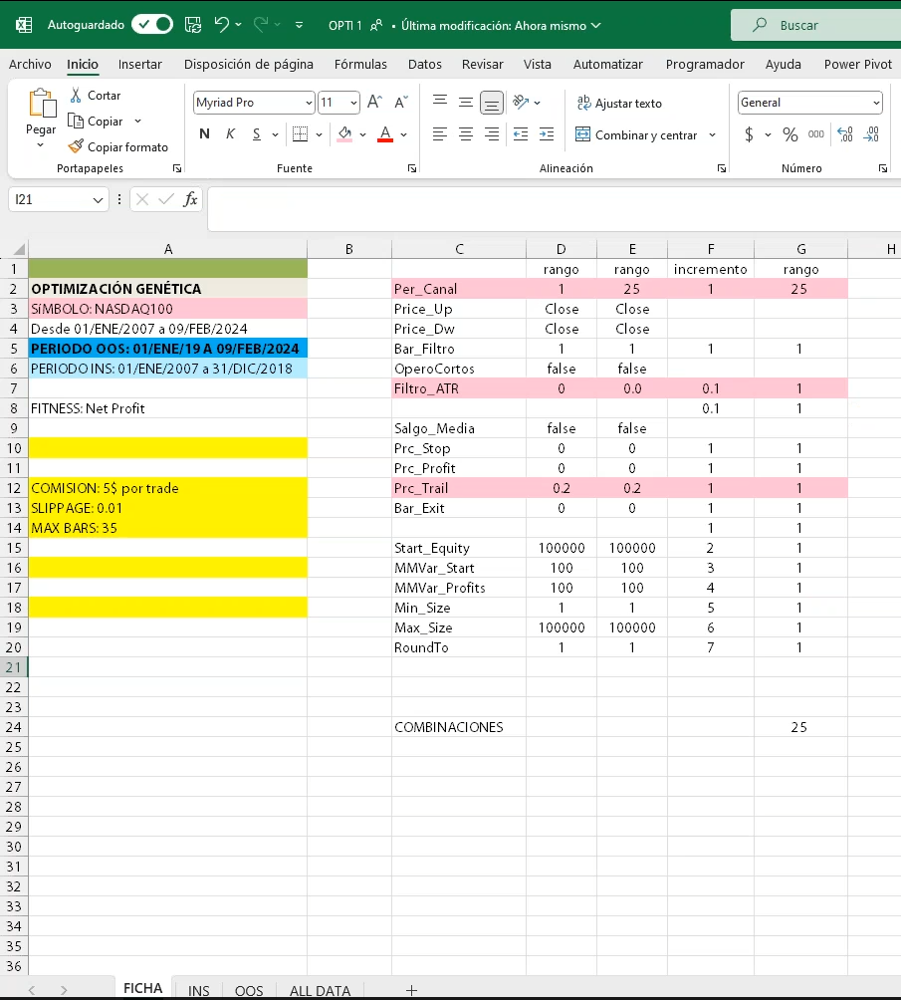
Vamos a trabajar: - Per_Canal - el periodo del canal,
que esa es la que vamos a hacer en esta primera - Prc_trail
- trailing, y probaremos - Filtro_ATR - el filtro,
a ver si tiene algún sentido o no
Nada más por el momento, nada más.
Se podría —y de hecho debería— evaluar también la parte
corta del sistema. Nosotros hoy no lo hemos hecho, pero
recomiendo que lo hagáis: quien tenga la capacidad técnica, que lo
pruebe; y quien no, que lo trabaje al menos de forma conceptual. La
próxima semana comenzaremos algo nuevo, pero haremos también un pequeño
repaso a esta parte: el lado corto del sistema, para ver si
realmente tiene sentido operarlo o qué ajustes podrían hacerse para
hacerlo viable.
En esencia, la idea sigue siendo la misma: el canal de Donchian puede colocarse tanto arriba como abajo. De hecho, ya está implementado también en la parte inferior, ¿sería operable de igual manera?.
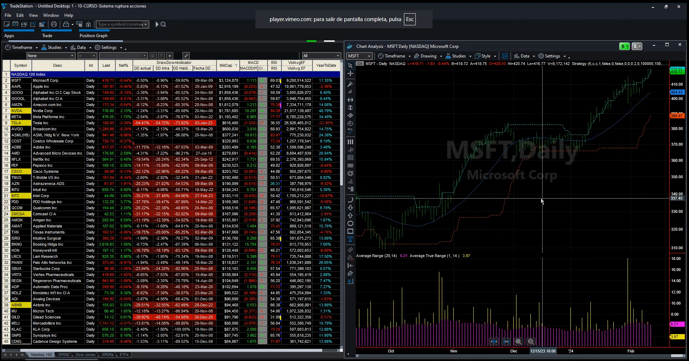
En la práctica no se comporta igual, porque el
mercado de acciones tiene un sesgo alcista muy marcado. Es posible
operar el lado corto, sí, pero hay que hacerlo de una forma muy
concreta, y tendencialmente no suele ser una de ellas.
Una de las cosas que no hemos hecho aquí —pero que veremos más adelante, cuando trabajemos la práctica de búsqueda de señales y evaluación de activos— está relacionada con la teoría que ya comentamos: si te planteas un setup tendencial, lo lógico es aplicarlo sobre activos que, por naturaleza, sean más tendenciales.
¿Son las acciones ese tipo de activo esencialmente tendencial? No
exactamente. A nivel de índice, no lo son tanto; sin embargo, a
nivel de acción individual sí lo son bastante más. A nivel de
índice, las acciones muestran tendencia en el largo plazo, pero cuanto
más bajas de timeframe, más el mercado de equities
menos tendencial es y más se vuelve antitendencial. Por
eso, muchos sistemas que operan sobre acciones —especialmente los que
trabajan índices bursátiles— acaban comportándose más bien como
sistemas antitendenciales, o versiones adaptadas a ese
enfoque, y no como sistemas tendenciales puros, que son más
propios de materias primas, divisas o acciones en contado, donde sí
pueden capturarse tendencias amplias y sostenidas.
Concepto
Vamos un poco al concepto, que es este, y este es el concepto. Entonces, ¿cómo hemos evaluado esto? Bueno, lo hemos evaluado a través de Portfolio Trader, que es este programa que forma parte de MultiCharts.
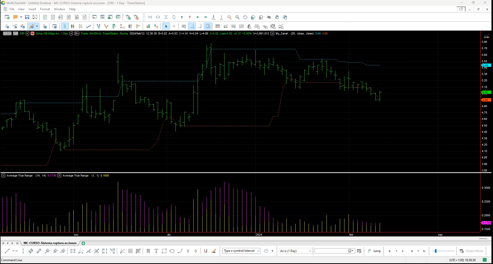
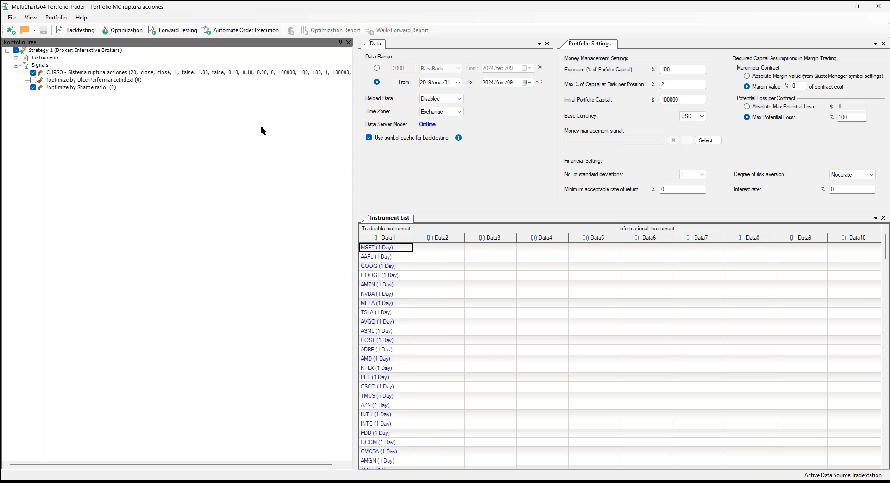
Como decía, es el programa que hemos usado, aunque podría emplearse cualquier otro. Al final, lo que hemos hecho aquí —y ahora os explico— puede aplicarse en cualquier plataforma, quienes tengáis la posibilidad de hacerlo.
Hemos trabajado, como se ve en el Excel, con un periodo in sample que va desde el inicio de 2007 hasta finales de 2018, y a partir de ahí, es decir, desde principios de 2019 hasta el pasado viernes, hemos usado el periodo out of sample.
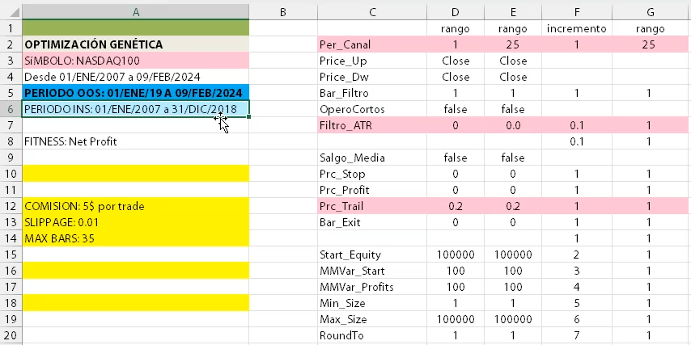
Podría haberse añadido un tercer periodo, y ya os he comentado que muchos autores lo hacen, llamándolo periodo de validación. Perfecto. Nosotros no lo hemos hecho porque nuestros procesos suelen durar bastante tiempo: imaginad que empezáramos a estudiarlo ahora y siguiéramos durante semanas o meses; esa observación continua fuera de muestra equivaldría a una especie de paper trade. En esa fase, ya estaría validado. Solemos hacerlo así, pero también es correcto dejar un tercer periodo; no es una práctica incorrecta en absoluto.
Hemos adoptado cinco dólares por $5 trade (que es
aproximadamente lo que cobra hoy en día TradeStation. Aunque
tiene distintos planes, este es un plan común para la mayoría. Si haces
más volumen, incluso puede resultar más barato).
Y hemos asumido un 1 tick de
slippage.
Hemos optimizado. Bueno, realmente lo hemos hecho de forma
exhaustiva: hemos puesto net profit, pero en realidad,
cuando haces una optimización exhaustiva, eso no importa
porque se recogen todos los datos.
En realidad lo que es Portfolio Trader, como os decía respecto a las plataformas, tiene algunas limitaciones a nivel de backtesting: por ejemplo, la información que ofrece es algo más pobre en términos de análisis. Su Walk Forward es bastante deficiente en configuración, especialmente en su versión portfolio. La versión para sistemas individuales es bastante mejor; ya lo veremos más adelante.
En cambio, tiene una gran ventaja: puede conectarse al mercado. Es decir, puedes completar el montaje del sistema, hacer forward testing, dejarlo en simulación —más adecuado para sistemas intradía, quizá— e incluso operar en tiempo real.
Además, Portfolio Trader permite configurar reglas de prioridad por código dentro del propio portafolio. Por ejemplo, si finalmente fuéramos a operar las 100 acciones, podríamos establecer criterios para decidir cuáles ejecutar: las 10 que entren primero, las 10 que cumplan una determinada condición extra del portafolio, etc. Este tipo de configuración no es el objetivo ahora, pero lo comento ya que estamos viendo el programa. Más adelante, cuando trabajemos con portafolios de forma específica, entraremos en detalle sobre todo esto.
Entonces: - Hemos puesto un 2% a cada acción con una cuenta de 100 mil dólares, hemos metido 2% de máximo a cada acción, por lo tanto permitiendo apalancar en el caso de que sea el caso y nada más - Luego ya las reglas del sistema propiamente que ya conocéis en el sentido de cierre por encima de la banda y un trailing stop
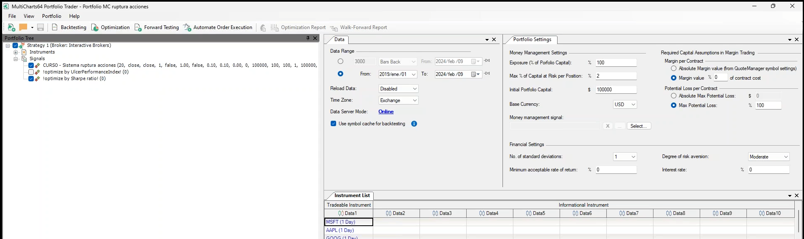
En esta primera optimización, claro, cuando tú evalúas, recordar la
teoría, una entrada hay que hacer una asunción para la salida, bueno yo
le puse 20% de *trailing*, podíamos haber puesto 10%, da
igual, le puse 10%.
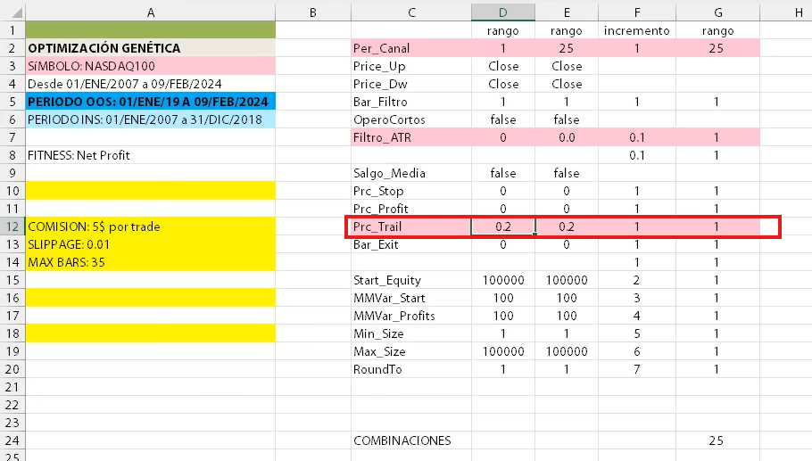
Os decía que es pobre porque esos son los datos que facilita a nivel de portfolio:
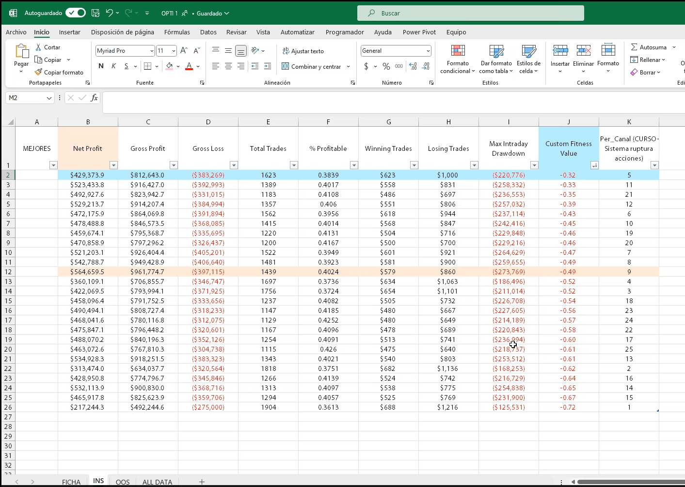
Bueno, se le puede incorporar un CustomFitnessValue. Es cierto que aquí necesitamos crear uno propio, ya que el que viene implementado por defecto en MultiCharts utiliza un Sharpe ratio. Eso que veis justo en Fitness Value realmente es el Sharpe ratio, ¿de acuerdo? En su momento habíamos pensado en usar el Sortino ratio, pero finalmente no lo hicimos porque este ya está incluido por defecto. Así que utilizamos ese valor para el Sortino, y ahí fue cuando nos dimos cuenta de que no era un cálculo a nivel de portfolio, sino de sistema individual. Por lo tanto, los datos que devuelve no son correctos.
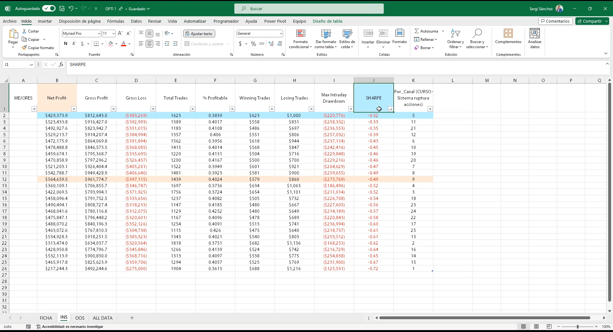
Aun así, para este ejercicio sigue siendo un dato útil. Creo que la lectura que ofrece probablemente es extrapolable y resultaría bastante similar en caso de aplicarse correctamente al portfolio, pero técnicamente no lo es. Cuando trabajas con un portafolio, hay que tener en cuenta que existen reglas de prioridad: el motor de Portfolio Trader evalúa barra a barra, pasando todos los sistemas por cada una de ellas, y luego aplica las reglas de gestión monetaria definidas a nivel global.
Por eso, el Sharpe ratio, el Sortino ratio o cualquier otra métrica de rendimiento no pueden calcularse sistema a sistema. No se suman. Deben calcularse sobre el rendimiento consolidado del portfolio. Y eso, actualmente, no está implementado en la plataforma, así que habría que programarlo manualmente. No lo habíamos notado antes; pensábamos sinceramente que ya lo hacía. Pero no, y por tanto hay que volver a construir este cálculo del Sharpe ratio desde cero.
De todos modos, para el objetivo actual, nos sirve. No nos da el Sharpe ratio real del portfolio, es decir, hoy no conocemos ese valor exacto, pero sí es válido como referencia comparativa entre sets de parámetros —por ejemplo, para determinar si el canal de 8, 10 o 14 funciona mejor—. En ese contexto, sí consideramos que tiene relevancia.
Lo explico así con total franqueza para que se entienda el motivo de
este valor negativo que aparece en la columna de sharpe.
Tiene sentido porque no es el Sharpe ratio real del portafolio,
sino la media de los ratios de los sistemas individuales, lo que
distorsiona completamente el resultado. El cálculo correcto debería
hacerse sobre los rendimientos agregados del portfolio,
aprovechando la diversificación que aportan las distintas acciones entre
sí. Aun siendo el mismo sistema, ya se aprecia que existe cierta
descorrelación entre los componentes del conjunto. Por supuesto, es algo
que puede mejorarse, pero aun así muestra una ligera descorrelación
interna.
Resultados obtenidos
Bien, los datos de la imagen 003.png son los resultados obtenidos al optimizar únicamente el canal de Donchian en el periodo in sample. Esta es la misma optimización mostrada en el Excel, pero recogida solo para el in sample.
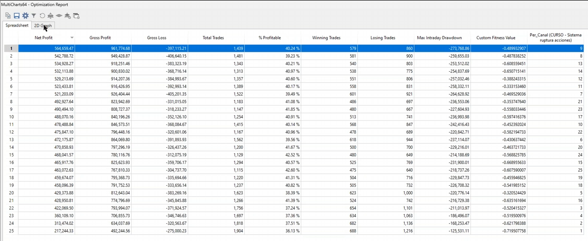
Aquí lógicamente solo tenemos una variable y, por tanto, no podemos
generar un gráfico en 3D, pero sí en 2D. En el eje izquierdo tenemos el
Net Profit con la linea verde o el
Sharpe ratio con la linea lila —este Sharpe ratio
falso, como lo llamaré para que se entienda—, que, aunque su valor
absoluto carezca de sentido, creemos que a nivel comparativo entre
sets sí tiene relevancia. Y también está el Net
Profit.
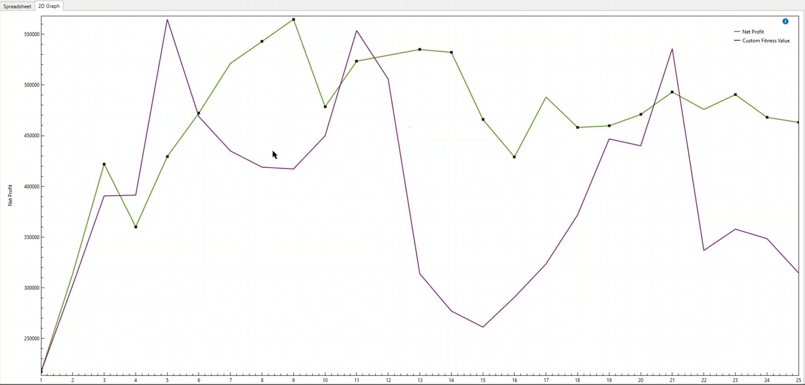
En realidad, aquí no existe una función fitness como tal, porque se incluyen todas las combinaciones posibles: solo hay 25, y por lo tanto se muestran las 25.
La función fitness es necesaria únicamente cuando hay que elegir entre muchas alternativas —por ejemplo, si tengo 1.000 combinaciones y quiero quedarme con 200, necesito un criterio para decidir cuáles conservar—. Pero si voy a conservarlas todas, entonces la función fitness es irrelevante.
En este caso, si quisiera analizar los datos en Excel, podría calcular cualquier métrica adicional directamente a partir de los resultados de cada optimización. Por tanto, no es necesario definir una función fitness específica. Esto suele ocurrir cuando el número de variables o inputs es pequeño, lo cual facilita el análisis. Aquí, de momento, hemos definido tres inputs posibles, aunque solo estamos trabajando con uno para centrarnos en evaluar la entrada, sin que los resultados se vean afectados por las salidas.
En otras palabras, dejamos la salida estática, con el filtro de
volatilidad desactivado (0) y la salida por trailing
stop fija en 0.20, de modo que no varíe. Así podemos
observar de forma aislada el comportamiento del canal Donchian por sí
solo.
Tenemos por un lado como veis el dato in sample:
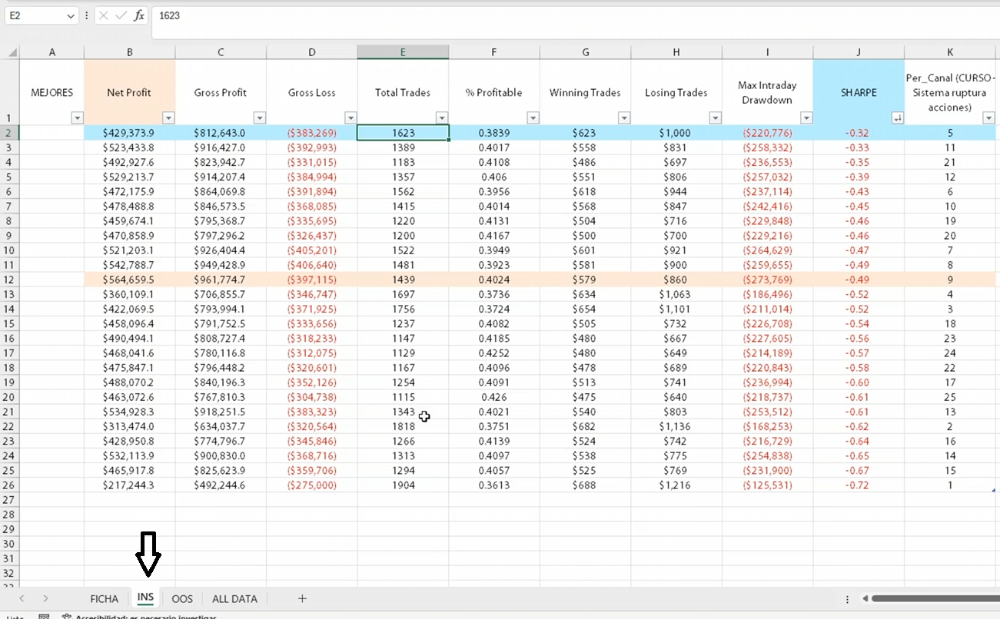
En el dato in sample aquí:
🔄 Heurística de Selección: La “Meseta de Robustez”
La delimitación de la zona (parámetros 6-15) no es un cálculo determinista, sino una validación visual de estabilidad. El objetivo es identificar regiones donde el sistema mantenga un rendimiento consistente frente a pequeñas variaciones del parámetro, minimizando el riesgo de curve fitting o sobreajuste.
Criterios Técnicos de Selección:
Ya estamos viendo que en el gráfico se aprecia claramente que en el retorno, que es el verde, hay bastante estabilidad, y marcamos esa zona aparentemente bastante buena con bastante estabilidad del in sample, y en el Sharpe la lila podemos decir que hay estas dos o tres zonas con picos muy altos y un pico cae dentro de la zona marcada del retorno.
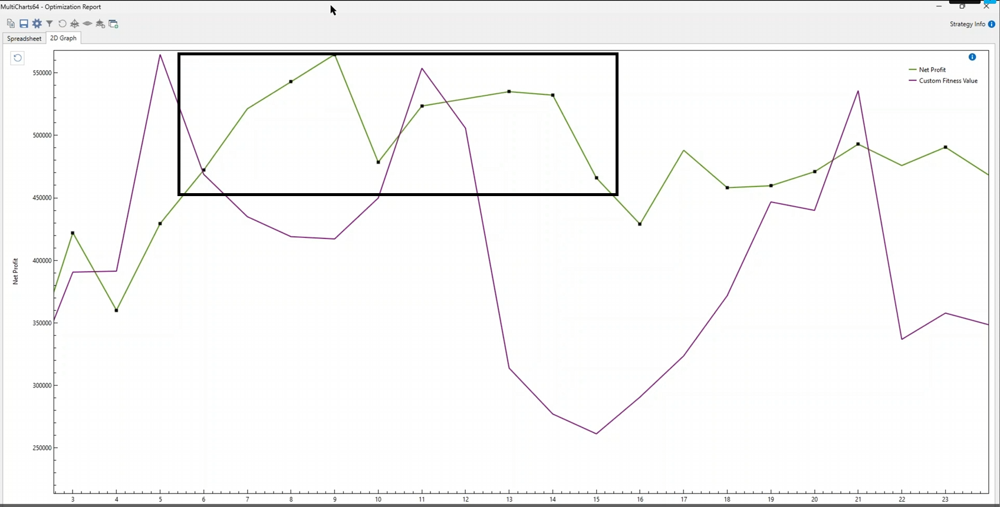
Vamos a ver el mismo en out of sample, siempre es el que nos da más información… Aquí también hubiera sido interesante que en esa práctica, no la hemos hecho, pero si al final fuéramos a operar haríamos esta misma optimización invertida. Lo explicamos, que nos gusta mucho este ejercicio, es decir, hemos hecho in sample de 2007 a 2018 y out of sample de 2019 a 2024, así simplificando mucho, pues bueno esto total eran unos 17 años, 17 años, vale, pues hacemos más o menos entre 4 y 5, pues haber hecho de 2007 a 2011/12, dejarlo esa parte out of sample y hasta ahora in sample, al revés, out of sample al final y out of sample al principio, y luego comparar el out of sample que os sale de esa manera que os sale de la otra y coger esa información, porque cuando salen iguales eso sí que es una prueba fantástica de robustez.
🔄 Validación cruzada temporal
Para saber si
un sistema es realmente sólido (robusto), no basta con
probarlo en una sola dirección. El autor propone un ejercicio de
validación cruzada:
¿Por qué hacer esto? Si al optimizar hacia adelante (al futuro) y hacia atrás (al pasado) obtienes resultados similares y los parámetros ganadores son los mismos, has encontrado una prueba fantástica de robustez. Esto demuestra que el sistema funciona bajo diferentes condiciones de mercado, sin importar el orden cronológico de los datos.
Porque en un sistema tendencial como este es verdad que hay 100 acciones, todos estos datos al final hay mucho sesgo de muestra, la práctica hablamos mucho mucho de ello, si yo tengo un activo como este:
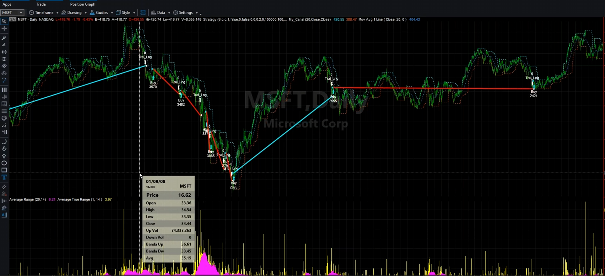
Aunque es verdad que en este caso creo que aplica bien, aplica bien, porque tienen en el periodo el in sample que empieza en 2007 nada más empezar pues tienen la crisis, la crisis del 2008-2009, aquellos pues que ya estuvierais en el mercado recordaréis. Es interesante esta mezcla porque ese mercado sí que es común, puede haber acciones que tengan otros porque lógicamente las 100 no tienen la beta que tienen Microsoft o que tiene Apple o Netflix que son acciones que tienen bastante beta con el mercado, pero claro la mayoría la tienen, la mayoría la tienen, y por lo tanto ahí sí que en esas crisis sistémicas de 2008-2009 y el tema del Covid 2020, ahí sí que cayeron todas, ¿de acuerdo? O para todas, se me entiende, prácticamente todas. A nosotros nos gusta mucho hacer esta doble, este doble juego por delante y por detrás del out of sample.
Opti 1
Tenemos el gráfico, prácticamente a medida que la línea
verde aumenta va degradando.
Es verdad que el out of sample aquí plantea cierto problema que
tampoco lo es tanto al lado del in sample porque menos
operaciones por lo normal… pero ya vamos viendo que la parte baja del
canal, aunque en este caso por ejemplo el out of sample con
valor 1 (última columna primera instancia)
lo hizo bastante bien, de hecho el que más dinero gana, y a medida que
va aumentando el canal va perdiendo, va perdiendo rendimiento, teniendo
insisto el trailing fijo:
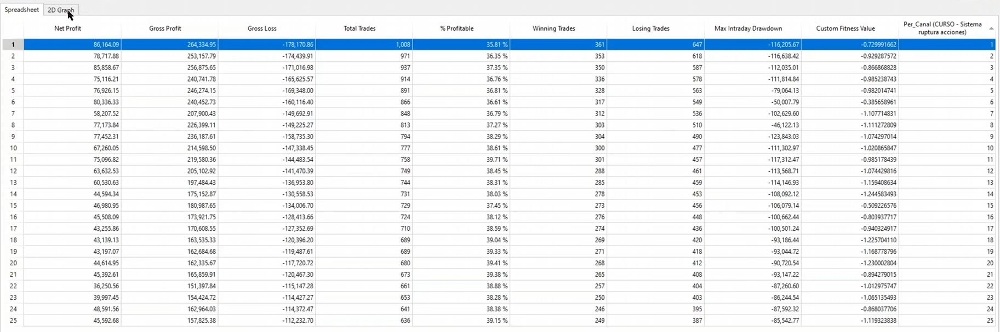
Aquí vemos el pico claro, sobre todo el Sharpe ratio, es aquí en 6 vemos un pico, que es verdad que hay un salto importante al 7, 5, 6, por ahí podía estar, podía estar bien.
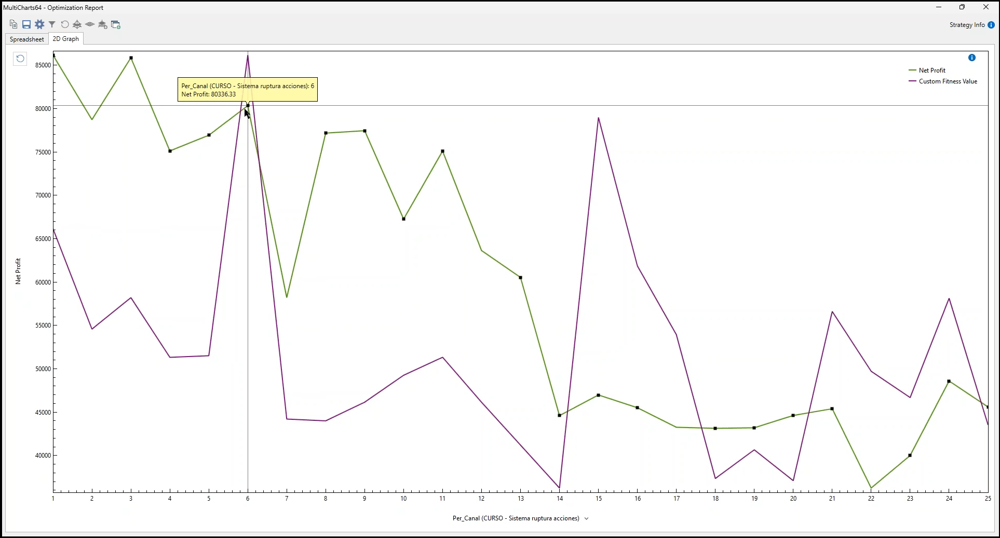
El parámetro Per_Canal (abreviatura de “Periodo del Canal”) se refiere a la configuración numérica del Canal de Donchian utilizado en el sistema de trading.
⚙️ Definición Técnica: Per_Canal
Es el número de velas (períodos) que el sistema mira hacia atrás para calcular los máximos y mínimos que forman el canal. Actúa como el activador de la señal de entrada: cuando el precio rompe el máximo de esos “X” períodos anteriores, el sistema ejecuta una compra.Funcionamiento en la optimización:
Per_Canal, que van del 1 al 25.Per_Canal corto (ej. 5)
reacciona rápido a los movimientos del precio, mientras que uno largo
(ej. 20) es más lento pero filtra más ruido.En resumen, es la “ventana de tiempo” que el algoritmo usa para decidir si un movimiento del precio es lo suficientemente importante como para entrar al mercado.
Vamos a acabar de ver el all data:
Uniendo los dos porque al final ahí se incorpora un poco todo y donde
además tenemos una muestra pues que ronda las
2000 operaciones, fijaros que ahí pues bueno estamos en esa
zona de 6 y 10:
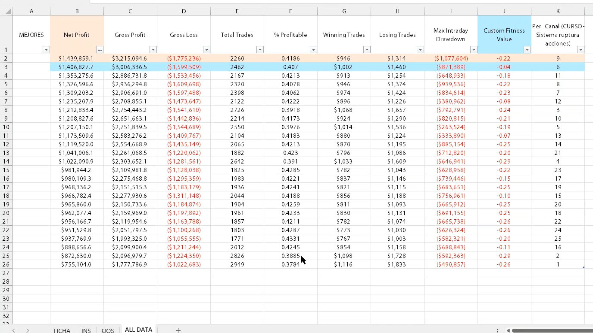
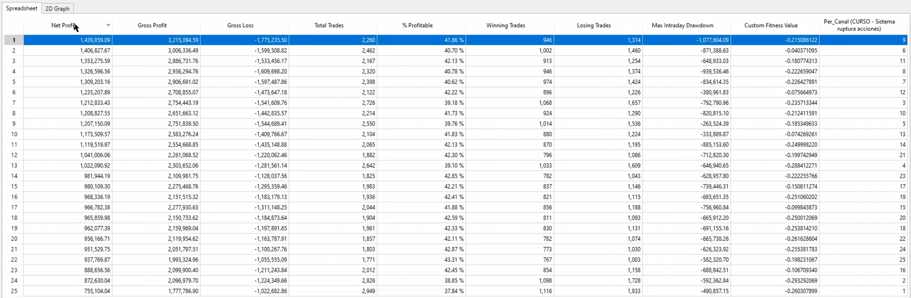
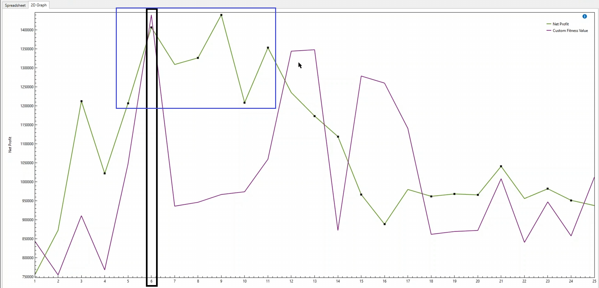
Es bastante estable, el Donchian en sí es bastante estable, fijaros que la zona podemos decir que… luego lo veréis optimizado todo junto, ya lo veremos… pero es bastante estable, el canal Donchian es bastante estable y en esta zona entre 5 y 10 pues está ahí bastante estabilizado. Aquí para irnos, para elegir uno de momento de cara a evaluar la salida, pues he cogido el 6, podríamos haber elegido otro, ¿de acuerdo?, es decir no tiene tampoco una brutal importancia en este momento, ¿de acuerdo?, pero el 6 me ha parecido un buen equilibrio y es el que he decidido bloquear para evaluar la salida. Luego ya veremos un performance report de todo esto puesto en conjunto.
🎯 El “Punto de Bloqueo” vs. El “Punto Óptimo”
El instructor no está eligiendo el parámetro final para operar, sino un valor de referencia estable para poder avanzar al siguiente paso: evaluar las salidas (stops y filtros). Para esto, prefiere un canal más reactivo (corto) que esté dentro de la zona ganadora.El 6 fijaros que al final tiene 2462 trades,
40% de aciertos, típico, típico tendencial, ¿vale? Luego ya
veremos más datos porque aquí simplemente pues nos sirve a nivel de
compararse, ¿de acuerdo?, no nos sirve de mucho más.
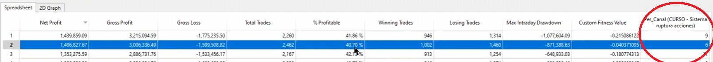
¿Cómo hemos evaluado el trailing?
Como os digo bloqueando el 6… ahora os muestro el Excel de esta segunda optimización:
Simplemente aquí pues lo que os digo es la misma cantidad de datos,
las mismas cien acciones, bloqueamos el canal en 6 y dejamos oscilar
también 25 incrementos Prc_Trail - rango entre 0.06 y 0.30
el trailing, hemos puesto 25 en uno y 25 en el otro, para que
tuvieran la misma capacidad de variación.
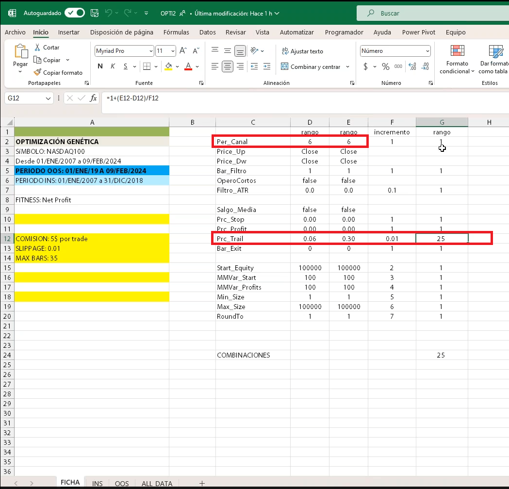
Aquí tenemos los datos in sample:
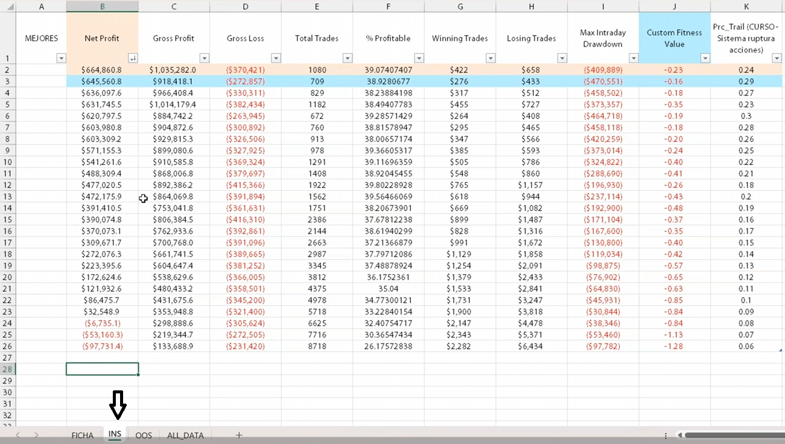
Aquí sí que se aprecia claramente que los datos bajos deterioran muchísimo, es decir el trailing realmente deteriora mucho a medida que lo acercas mucho, claro estamos hablando de un sistema tendencial, opera muchísimo, 7000, 6300 trades, se lo lleva todo en comisiones y sale demasiado rápido, realmente no tiene sentido, habría que verlo evaluado desde bastante más arriba, como mínimo 0.10 y 0.15 y hasta más de 0.30 quizá para verlo (hablando de la columna K refiriéndonos de la columna B net profit).
Porque al final lógicamente estamos en diario, lo que quiere es que corran los beneficios, pero nosotros también nos interesa protegernos, protegernos de las caídas, ¿de acuerdo?, que es el problema, al final lógicamente si evaluamos solo net profit va a querer mantenerse dentro, por eso hay que evaluar alguna cosa más y aquí tenemos este ratio de Sharpe ratio que aunque no nos dé una buena lectura nos sirve para este cometido que os digo.
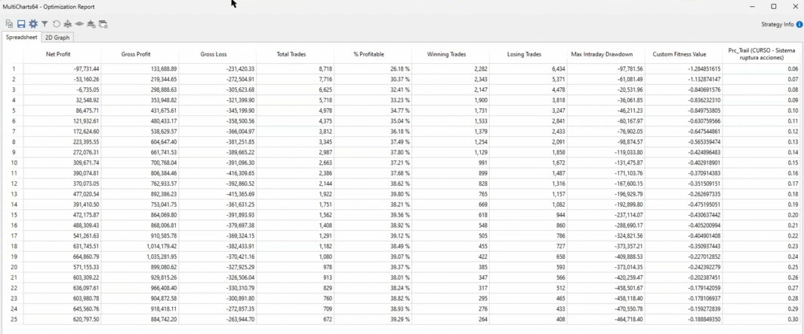
Y vamos a ver el opti 2 , in sample:
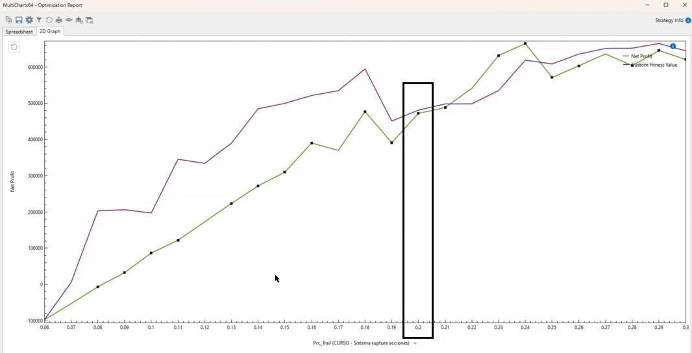
Este perfil es bastante distinto al anterior porque en el anterior el Donchian era bastante armónico porque todo el rango mostraba cierto rendimiento y aquí pues claramente no es así, tiene los valores bajos pues prácticamente sin sentido hasta que no llega a la zona de 0.20, 0.20 y algo, nos estabiliza en un cierto rendimiento, lo cual pues como os digo habría tenido sentido dejarlo ir un poquito más, un poquito más, pero bueno lo hemos dejado ahí, está hasta el 0.30 que ya creo que es suficiente, bueno ahí habéis 0.20, está bien, es el que habíamos puesto antes por la que habíamos visto la evaluación preliminar, la zona de 0.20 pues puede estar bien, la verdad que 0.20 de momento no apunta a ir mal.
Si miramos el out of sample y nos fijamos, fijaros que ya por este “Sharpe ratio falso” (columna K), instancias 0.18, 0.27, 0.26, esa zona,
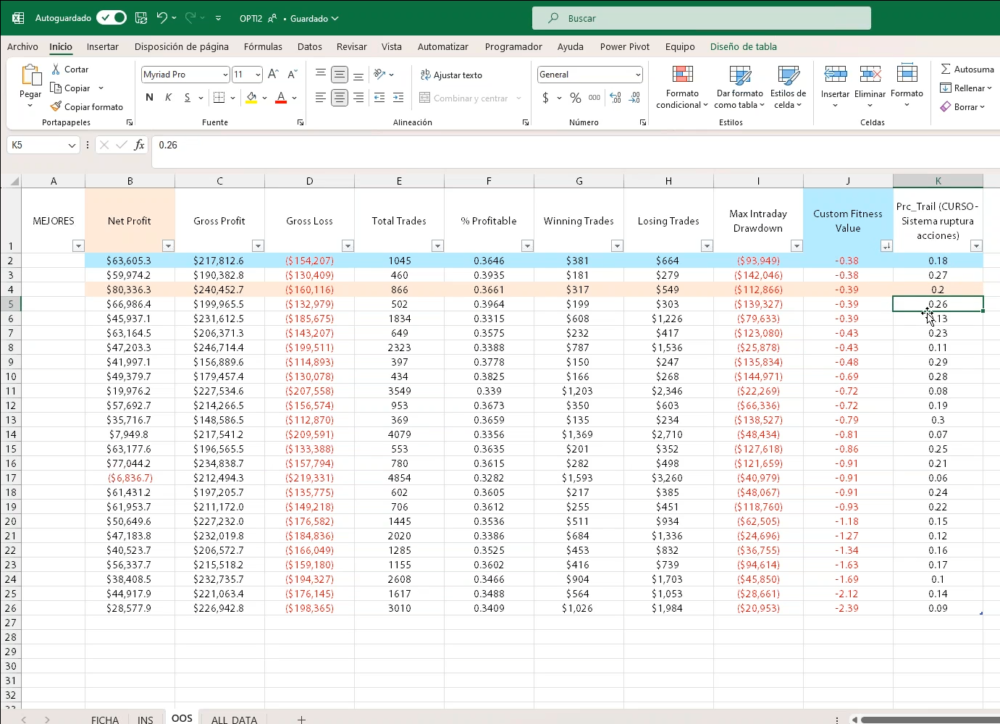
y si nos fijamos en net profit ordenado pues clava el máximo 0.20, 0.21, 0.26, 0.18, es decir más o menos la misma zona. Vamos a ver este gráfico:
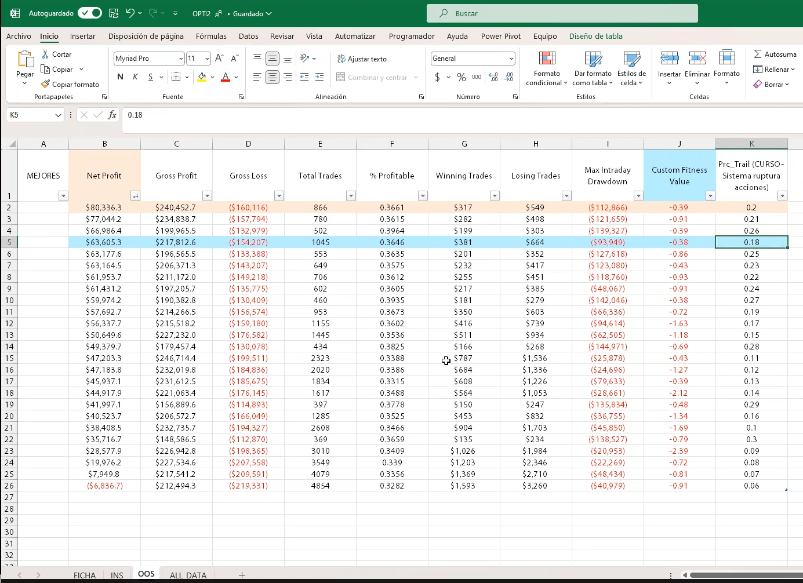
Vemos aquí el gráfico pues lo que veis, claramente las partes bajas, pues este especie de Sharpe ratio sí que es bastante volátil, pero ya veis que no es estable, es el clásico ejemplo donde se ve que no es estable, que varía mucho, que puede tener un valor bueno pero lo siguiente no, etcétera, y habéis que en la parte final sí que estabiliza y estabiliza en valores altos, veis claramente entre 0.20 y 0.25 todos son valores buenos, todos son valores buenos
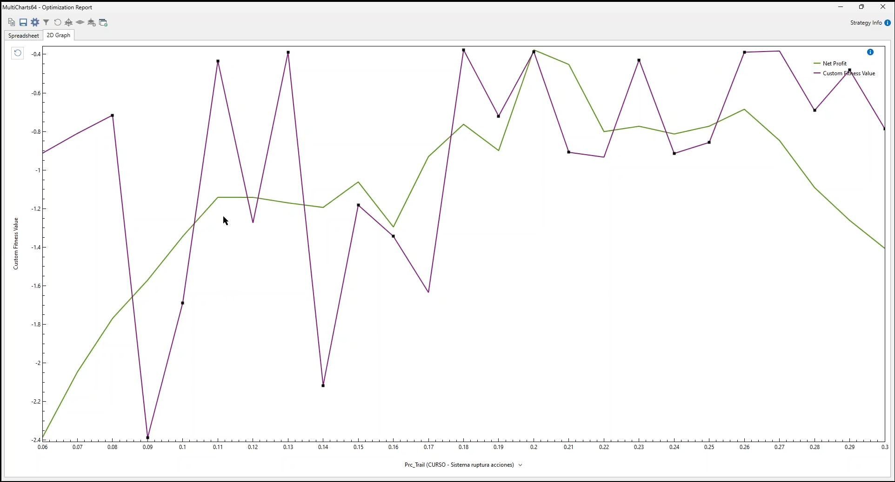
y donde además recogemos una cantidad importante de trades, estamos hablando todavía en este dato fuera de muestra out of sample de 900, 800 trades de ese orden (instancia 0.2).
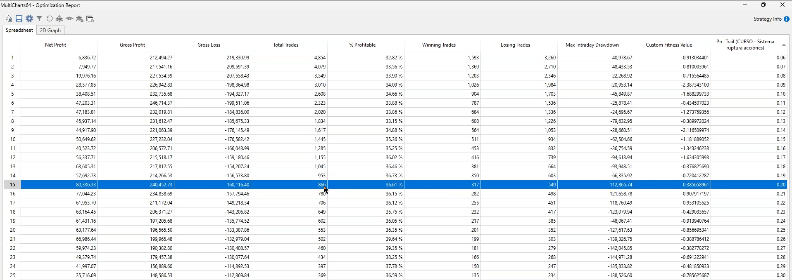
Y si ya recogemos los dos unidos:
Pues nuevamente tenemos que se va muy arriba en 0.27 (columna K instancias de profits), el que más tirando hacia arriba 0.27, 0.26, 0.25, bastante bastante alto,
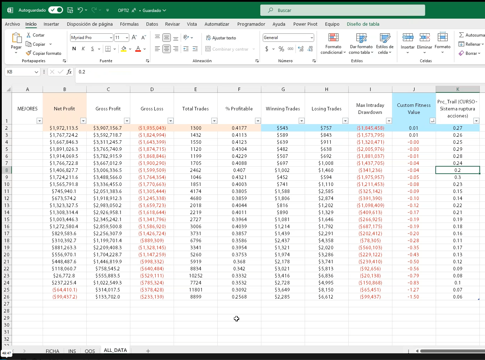
pero aquí a ver que os la abro este gráfico:
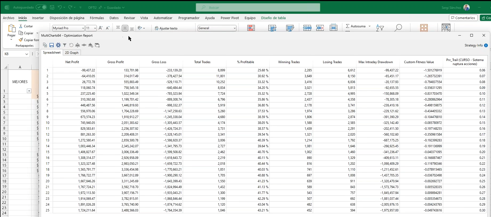
Es el que tiene más trades y por lo tanto es el que está pues más estabilizado, pero aquí se aprecia claramente esta tendencia que ya veía bien, veis en el in sample, bueno pues a partir de 0.20 podríamos haber elegido uno más alto pero al final hemos preferido bloquear el 0.20, aunque repito podríamos haber cogido otro,
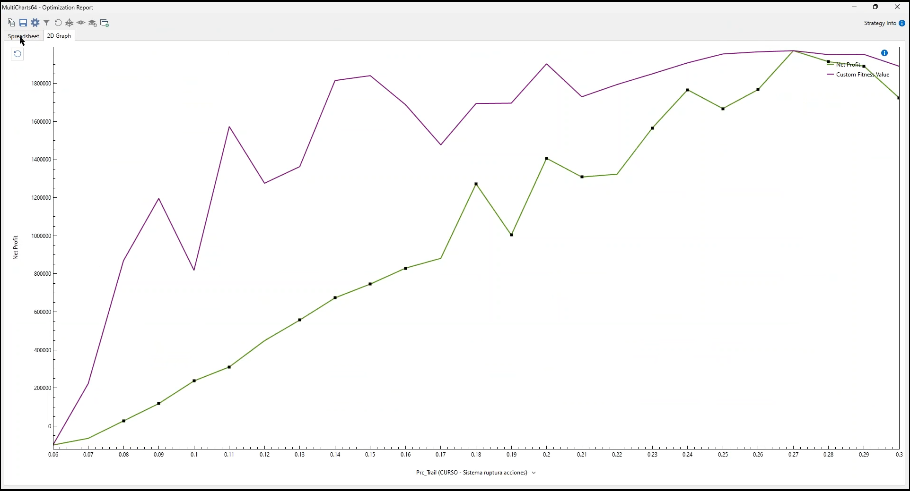
si os fijáis aunque los que dan mayor datos 0.26, 0.25, también el 0.20 fijaros que tiene el doble de operaciones. Siguen manteniendo, mantienen bastante buen equilibrio, ¿de acuerdo?, se está bien acompañado (fíjate en el gráfico) se nota que hay bajada que vuelve a subir, es decir bastante estabilizado y tiene muchos trades.
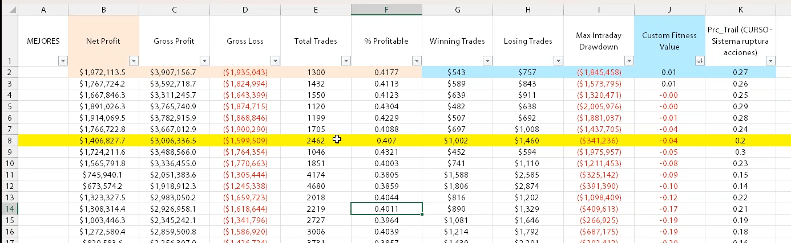
Nosotros en este tipo de situaciones solemos tirar siempre a más operaciones, solemos tirar más a más operaciones porque nos tira mucho la significación estadística, entonces aquí aunque estemos viendo mejores resultados en profit con 1500 trades, con 1300 trades, la zona de 0.25 por ejemplo, porque tampoco lo granularíamos demasiado esto a 0.26, 0.27, 0.20, 0.25, podríamos también haber elegido perfectamente estos que están bien, tiene un mejor resultado pero tiene como veis 900 trades, entonces siempre que estamos ante esa dicotomía siempre cogemos más trades, siempre cogemos más trades aunque suponga un poquito menos rendimiento, porque más trades significa mayor significación estadística y también significa mayor respuesta ante cambios en el mercado. Aunque gana mucho menos nuestra elección de 0.20, fijaros el drawdown que es bastante menos.
Si tiene sentido hacerlo porque realmente como hay gestión monetaria hay un 2 por ciento y las salidas son porcentuales, realmente el capital está bastante ecualizado aunque no sea en porcentaje, ¿de acuerdo?, pero aún así no nos convence del todo que no sea en porcentaje, ¿de acuerdo?, pero no nos convence del todo… pero bueno ya digo que no está mal tampoco hacerlo, y por eso añado esta columna recovery factor
La columna añadida L es lo que mucha gente llama un recovery factor que es net profit partido por drawdown:
All data
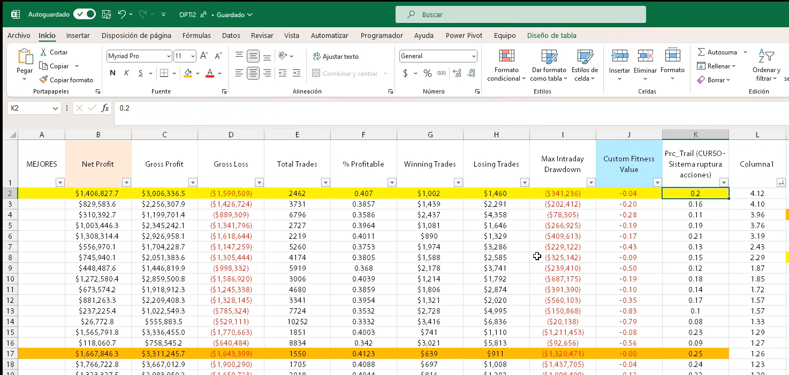
La verdad con los datos que tenemos aquí pues es de las pocas cosas que podemos hacer, ¿de acuerdo?, y pues podrías hacerlo y como veis 0.20 es el que mejor ecualiza sin haberlo hecho, pues ya veis, ya veíamos que esa zona es la que equilibra, porque tiene muchas operaciones y tener muchas operaciones normalmente mejora la respuesta ante, hablando de un tendencial, hablando de un tendencial, mejora la respuesta ante caídas y demás.
Claro, hay que estimar bien los costes, ¿de acuerdo?, hay que estimar bien los costes porque dices tú, estimas que prefieres operar mil trades* más* pero eso solo te va a servir si has estimado bien los costes y si realmente tienes un tick de deslizamiento, podrías hacer ahí también una prueba de sensibilidad, deberías de mirar bien esto y probarla también en dos ticks: “es decir bueno pues mira no lo tengo claro voy a volver a hacer la optimización con dos ticks en vez de un tick a ver qué tal, a ver cómo lo veo”, ¿de acuerdo?, y si ves que no lo ves claro pues podrías entonces decantarte más al 0.25.
Pero nosotros aquí nos quedaríamos con el 0.20 porque 2400 operaciones con dos inputs solo, además optimizados de manera separada, está realmente bien.
Que es esto, luego no quiere decir que lo operemos en las 100 acciones, de esto ahora perfectamente podríamos luego pues operar las 10 acciones de mayor capitalización por ejemplo, por elegir un criterio, no debería de operar las 100, también podría hacerlo, pero que no es obligatorio, no quiero decir que esto lo estamos haciendo para validar la estrategia, para tener una mayor significación estadística, pero no es obligatorio que luego en nuestro plan operativo usemos todas las acciones.
Pues aquí hemos bloqueado 0.20:
in sample
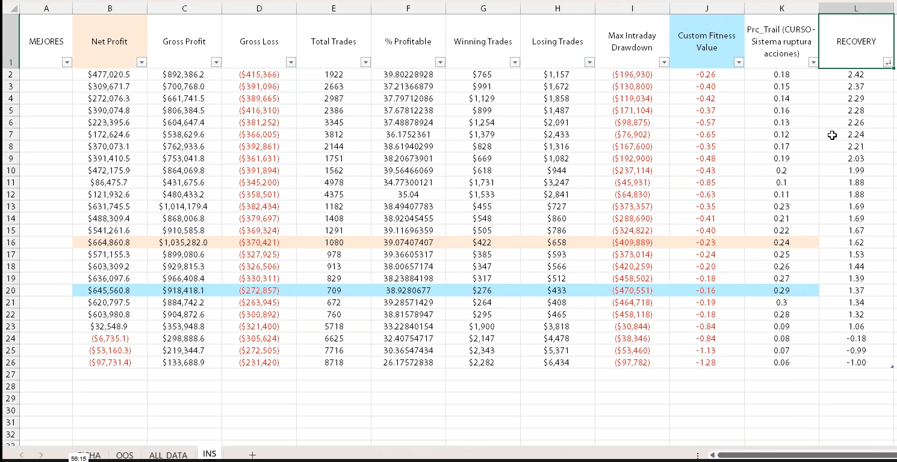
0.20 está a mitad de tabla en el caso out of sample:
Out of sample:
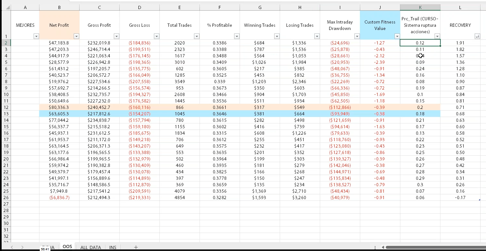
Filtro de volatilidad ATR
Vamos con la tercera. La tercera hemos ido a probar un filtro que es totalmente opcional y no es obligatorio, pero hemos querido ver, hemos querido ver porque queríamos introduciros un filtro de volatilidad aquí para un tendencial y así pues ya explicároslo, pero como digo no es obligatorio, pero lo hemos probado. Bueno, para ver un poco cómo oscilaba, que este sí que teníamos muy claro que no le íbamos a dejar este nivel de granularidad, pero queríamos ver un poco, queríamos analizar cómo se movía el tema, de acuerdo, y hemos dejado el 6 fijo, hemos fijado el 20 y hemos dejado el filtro ATR que es el multiplicador.
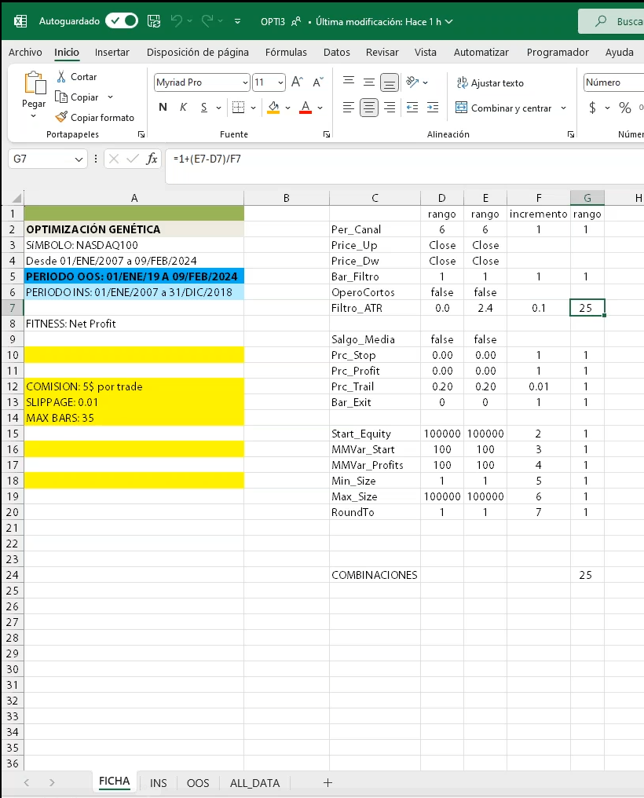
Ahora os voy a enseñar en el gráfico. Ha quedado claro. También hemos dejado oscilar 25, vale. Esto, esto ¿cómo funciona?, vale, esto ¿cómo funciona?
En el gráfico, aquí abajo, fijaros, tengo dos ATRs pintados: es el de 22. ¿Por qué 22? Bueno, porque es un mes más o menos, sin más, no lo hemos optimizado.
Al final lo que queremos es ver si la volatilidad va a variar, nos
hace un filtro. Volatilidad lo que hace es comparar la volatilidad
actual con la volatilidad de x periodo. Hay varias maneras de hacerlo:
eso que te crea la desviación estándar, hay algún estudio
con el VIX que espero en el curso poder mostrar alguno, de
acuerdo, con la curva del VIX, método poco avanzado y creo que no tocaba
en este momento del curso, y este es un método sencillo que al final
tiene bastantes… aporta, aporta valor. Aporta más valor en los sistemas
de ruptura y tendenciales que no en tendencia pura, pero bueno, lo hemos
querido meter para explicároslo y ya está, y se puede usar.
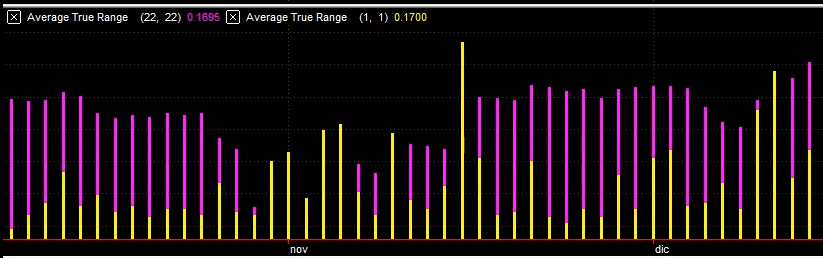
Simplemente comparar, lo que os digo, la volatilidad actual —la volatilidad de hoy, de la vela actual, es Apple— y pues la volatilidad de hoy es la barra amarilla, con la volatilidad media del último mes.
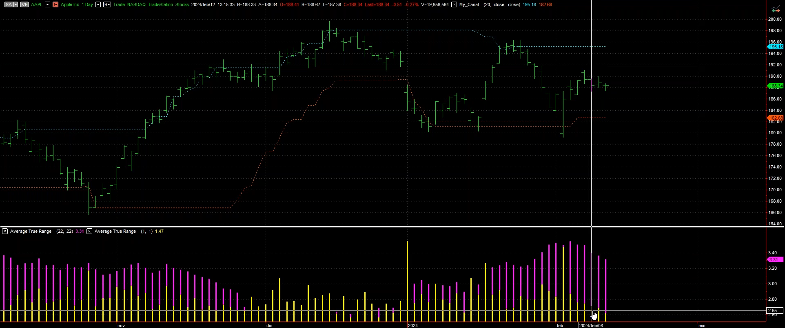
Como veis es bastante más alta, es decir, está haciendo todos estos últimos días, como veis, está teniendo una volatilidad baja, de acuerdo, para su volatilidad media del mes. Y esto es lo que evaluamos simplemente, de acuerdo.
code : ../../13-practice-03/code/CURSO_SISTEMA_RUPTURA_ACCIONES.ELD
Ese filtro consiste en el código simplemente en que, si esa volatilidad por un multiplicador —que vamos a suponer que es uno, vamos a suponer que el multiplicador es uno, con lo cual no es importante decir que es la volatilidad— si esa volatilidad de hoy es menor que la volatilidad de todo el mes, si eso se cumple, es decir, si la volatilidad de hoy es menor, entonces puedo operar. Si la volatilidad es mayor, no.
// Filtro de volatilidad
If Filtro_ATR > 0 then
Condition1 = TrueRange < AvgTrueRange(22)[1] * Filtro_ATR
else
Condition1 = true;Podría incluso probarse con más, que en vez de la del mes que fuera la del trimestre. Es decir, estaría bien, es decir, estaría bien porque a lo mejor “es que no, yo sabes que como voy de largo plazo prefiero evaluar contra la volatilidad de más periodos”. Lo podemos mirar. Hemos hecho con un mes, pero hubiera tenido perfectamente sentido hacerlo con más. Con lo que os digo, porque al final, pues yo que sé, vais a ver que se vuelve mucho más tranquilo. No le pongo pues 60 días, por decir algo. 60 días
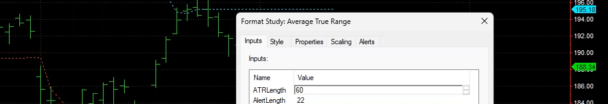
es que, pues, se vuelve más estable, de acuerdo, se vuelve más
estable. Seguimos teniendo una volatilidad baja pero se vuelve un
poquito más… bueno, más cómo decirlo… más rígida. , pero al final tiene
más periodos recogidos, entonces tendría las dos cosas sentido y habría
que evaluar un poquito muchas acciones. Nosotros lo hemos hecho con un
mes, en la Optimización 3 rango 25 He
dejado el Filtro_ATR de 0 a 2.40 por dejar 25, pero ya os digo
que no en este caso no le vamos a hacer; queríamos simplemente
analizarlo, ver un poco el mapa.
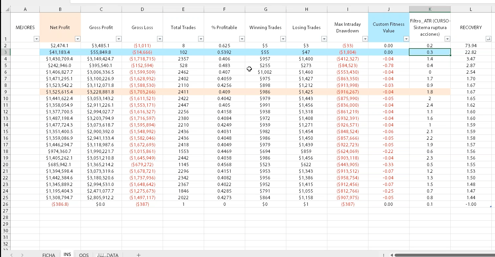
Y ese 73.94 (L) fijaros es el clásico ejemplo de
poca significación estadística. Este, con un 0.2 multiplicador, pero
tampoco… que realmente no opera nunca. Entonces bueno, no, lógicamente
no tiene sentido. En la columna ATR con cero, con cero para que lo
tengáis en cuenta, equivale a no usarlo. Es decir, cero,
este valor que os marco equivale a no usar filtro. Es la versión sin
filtro y da un recovery de 2.54. Aquí coloca muy bien. Hay
alguno que coloca ligeramente mejor —ligeramente, sí, no, incluso
bastante mejor— pero también el no usarlo queda bastante equilibrado.
Vamos a ver el mapa, vamos a ver el mapa en in sample.
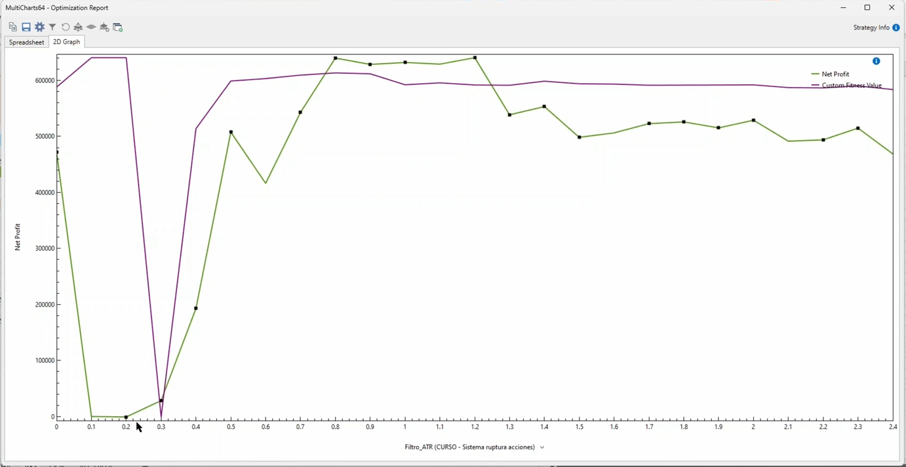
Aquí el 0.1, pues, queda esta bestial bajada y a partir de ahí, pues
a partir de 1, estabiliza mucho por Sharpe ratio y sí que aquí,
entre la zona de 0.9, 1, 1.1, es donde tienes… es decir, en
1, de acuerdo. Ahí está claro que nos quedaríamos con 1,
que es lo que os decía. Este realmente nunca lo dejaríamos así. Lo
podemos usar en 0, en 1, en 2, si me apuras un 1 y medio, vale. 1 se
suele hacer así: el ATR, un ATR y medio, 2 ATRs, 3 ATRs, de acuerdo. No
vamos a ir a 1.3 ATRs, os decía del sentido común y la lógica en cuanto
a los incrementos, de acuerdo. No vamos a poner 0.33 ATRs, vale, porque
eso es una sobreoptimización de manual, de acuerdo, manual.
Aquí tienes la fórmula integrada de forma precisa para tu notebook:
📊 Recovery Factor
El recovery —recovery simplemente el nombre, no importa porque no en todas las plataformas se llama recovery— es net profit partido por drawdown. Como el drawdown está negativo, se multiplica por menos 1, se cambia de signo para que no tenga un valor negativo. Es un buen estimador de retorno-riesgo a nivel de portfolio.
\[Recovery Factor = \frac{Net Profit}{|Max Intraday Drawdown|}\]
En TradeStation está el TSI, que es justamente
este ratio multiplicado por los winners, que es el número, el
porcentaje de ganadoras de trades acertados, vale. Es otro
ratio que se llama TradeStation Index, que es de este estilo.
Vale. Cuando hablamos de las funciones fitness, pues hablamos
muchísimo de esto: de retorno y drawdown, y hablamos de
retorno-riesgo. De muchos, y os dije que todos tienen mucha correlación
y que a nosotros nos gusta mucho el Sortino, vale. Trabajé
muchos Sortinos, ¿os acordáis? Y también nos gusta bastante
Loopy, vale. Los iremos viendo durante el curso, de acuerdo,
los iremos viendo, no os preocupéis.
Aquí me interesa ir introduciendo las cosas poco a poco, y en este
sistema tendencial —que acordaros hablamos que es para un perfil de
medio-largo plazo, que no necesita una implicación, una dedicación
continua, que no quiere estar todo el día pendiente del mercado— pues
bueno, buscamos de entrada una estrategia de este estilo y decidimos
usarlo por Donchian porque había salido mucho en el curso. Haremos
muchas más cosas y veremos distintos ratios, pero al final es un ratio
de retorno-riesgo, de acuerdo. Que al final casi siempre son los que son
más interesantes, de acuerdo. Ratios de retorno-riesgo. Porque al final
retorno es lo que nos interesa ganar, pero el riesgo nos interesa mucho
controlarlo, porque cuando uno no controla riesgos se va a tomar viento
a la farola. Entonces no queremos irnos a tomar viento del mercado, y
sobre todo cuando uno empieza debe fijarse más que nada en el riesgo,
porque
el riesgo es lo que nos saca de la partida, es lo que nos envía para casa y no podemos permitir que nos envíen para casa,
de acuerdo. Eso es lo que no podemos permitir bajo ningún concepto, y
por eso es vital, vital, vital controlar el riesgo.
Ale, vamos al out of sample, estamos evaluando el filtro, estamos evaluando el filtro por sí solo habiendo bloqueado el canal, habiendo bloqueado el canal en seis, que francamente podría haber estado en otro, y en 0.20 el trailing, que también había varios pero sí que pues por ahí parecía equilibrar bastante bien.
Aquí hay combinaciones como habéis visto antes 0.1, 0.2, pues el out of sample en este caso dan 0 y fijaros tiene divisor por 0 porque es que no llega ni a operar, el out of sample no hace trades, pero aparte de eso es que en out of sample justo el valor 1 es el que queda mejor colocado en el retorno, en retorno-riesgo.
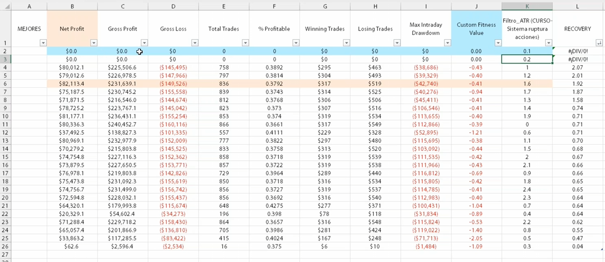
Vamos a ver el mapa opti 3:
La parte baja pues no vale la pena ni comentarlo y a partir de ahí 0.9, 1, 1.1, 1.2, 1.5, toda esta zona, que ahí cuidado el caso 1.7 veces para que empieza a degradar, en la zona de 1 la verdad que está bastante, 1, 1.2 está bastante cómodo, bastante cómodo. Ahí también aquí en el recovery pues se aprecia poco, eso es el recovery, al final se aprecia un poco eso, el 0 coloca bien, en 0 coloca bien.
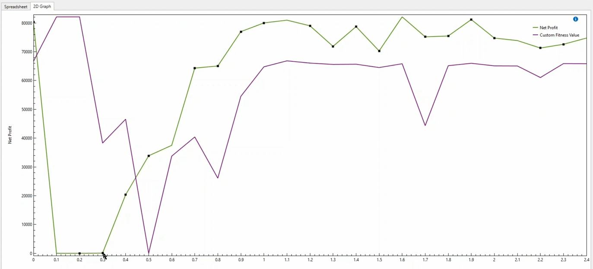
Vamos a ver en el all data que es donde al final siempre hay más trades, por lo tanto más significación estadística, y que al final recoge la parte optimizada y la parte no optimizada. Está bien analizar el all data, no penséis que la teoría que lo hicimos, al final está bien comparar el in sample, comparar el out of sample es muy importante, perfil de optimización acordaros, y bastante interesante esto del out of sample por delante, el out of sample por detrás, moverlo de acuerdo, mover la muestra, que es parecido a lo que hace el BRaC, pero nosotros no le hemos puesto nombre, pero es parecido a lo que hace el BRaC. Pero al final la elección puede perfectamente hacerse con el all data, de acuerdo, pero siempre que haya significación y que sea concordante con lo que hemos visto en el out of sample y el in sample, al final eso es la unión de los dos.
De hecho Kaufman, y es lo comparto, una cosa es la variación de la cosa y es la selección de parámetros, él decía “yo para elegir los parámetros cojo la optimización hasta ayer”, solo decía Kaufman (probablemente referencia a Perry Kaufman, autor de “Trading Systems and Methods”), hasta ayer, ¿por qué?, porque me interesa, me interesan todos los datos disponibles, yo ya he evaluado el sistema, considero que es robusto, considero que la franja de optimización, imaginaos aquí la zona de entre 6 y 12 por ahí, vale, y el trailing pues lo voy a dejar ya fijo en 0.20, voy a ver el canal, bueno pues a lo mejor optimizo solo el canal con 0.20, filtro el filtro en 1 y el trailing en 0.20, y le voy a optimizar solo el canal, le meto todo el histórico que tengo y le meto hasta el último día, y con eso elijo… puedo perfectamente hacer eso. Sería un comportamiento correcto con la idea ya validada, con la idea ya validada y considerada robusta, y en la zona que yo voy a operar, y ahí la elección la haría mirando varios casos, miraría Sortino, de acuerdo, in sample, out of sample de distintos ratios, miraría aquí recovery, pero podría hacerlo con el all data y optimizado hasta el último día, perfectamente.
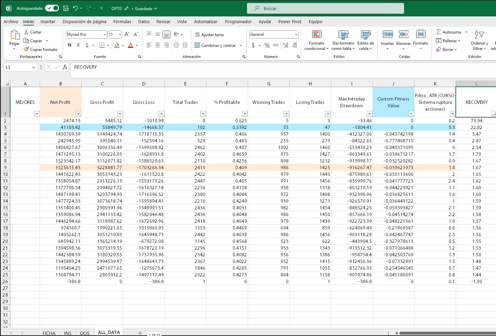
Aquí veis lógicamente los primeros con un recovery muy alto porque no operan, pero luego pues ya nos vamos a ir 1.4, 0.4, 0… aquí el 1 cae un poquito más, nos sale en recovery también puntual, de hecho el recovery sale bastante mejor el 0, bastante mejor el 0 que el 1. Con lo cual aquí operarlo o no está dudoso, está dudoso, está dudoso, ¿por qué dudoso? Bueno, es algo que es normal, porque eso que os digo,
en los tendenciales puros los filtros no son tan eficaces, donde son muy eficaces es en los sistemas de breakout
que este lo haremos breakout no hoy, lo podemos plantear pero no lo hemos analizado, que hemos hablado de él, pero como breakout es probable que aporte más, es probable que aporte, que aporte más, aquí es discutible, aquí es discutible, pero lo queríamos explicar y ver cómo lo hubiéramos analizado, que es un poco al final, de acuerdo, no metido a saco todo optimizado y a ver qué nos sale, no claro, lo veremos eso también, ahora veremos todo optimizado a ver qué nos ha salido.
Vamos a ver el mapa y lógicamente los valores bajos, pero ahí veis a partir de 1 pues queda bastante estabilizado, lógicamente el 0 también está ahí pues bastante alto, vale, pero aquí eso, 0 o 1, de acuerdo, no hay más, es el juego que yo haría, un poco el 0 o 1. Por recovery aunque es un tanto precipitado, no es tan concluyente esto, recovery tampoco es la panacea, quiero decir que si recovery no da, pues ya no… no, no es así, hay otros factores, pero sí digo poco, los dos candidatos, de acuerdo, aquí tenemos 2.400 y tenemos 2.200.
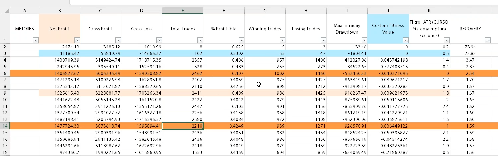
Yo aquí francamente con esta información no lo veo muy claro, que habría que realizarlo un poco mejor, pero sí que perdemos 206 trades… en un filtro es para perder trades… cuidado… sí es lo que pasa, que fijaros que ganamos un poquito de profit pero perdemos drawdown… entonces a costa de ese profit no sales ganando, realmente no acaba de conseguir reducir el riesgo que es quizá donde más debe actuar el filtro, ¿de acuerdo? Saqué un filtro, al final, ¿qué estoy buscando yo? Estoy buscando pues evitar trades negativos, es verdad que mejora el porcentaje de acierto que es lo lógico, pero no mejora el drawdown, esto habría que profundizar un poco más. Podemos hacer Maestro, vamos a intentar mirarlo, Maestro había pensado cuando hagamos la pausita de cinco minutos tratar de montarlo y lo podemos mirar. Pero yo con esta información en el filtro la verdad no lo veo
Le he hecho toda junta porque queríamos mostraros el mapa 3D. Hemos hecho esta optimización junta. ¿Qué es la optimización junta? Pues:
Prc_Trail (trailing) de 6 a 30 — de 6 hemos
visto que no, pero por hacer la mismaFiltro_ATR 0 o 1, simplemente, es decir, no
o sí pero con unoTambién quizá mejor, en vez de 22, va mejor poniéndole más, un periodo mayor. La verdad que no lo hemos mirado, pero podríamos; podemos directamente mirarlo, nos llevaría mucho rato. Y puede ser porque a lo mejor simplemente la volatilidad de un mes pues es una comparación demasiado cercana, pudiera ser. Pero vaya, así justito sí que da una cierta mejora, pero no en el recovery: da una cierta mejora en rendimiento pero el drawdown empeora, así que no me convence porque un filtro es, sobre todo, para mejorar el perfil de riesgo.
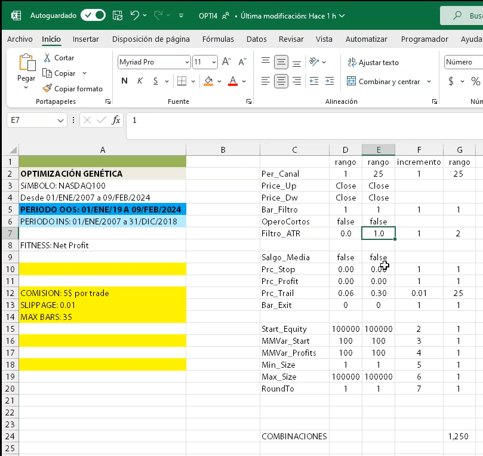
Pero bueno, hemos hecho esa optimización. Aquí ya tenemos 1.250 combinaciones con las 100 acciones, ya es un poquito más intensiva. Pero realmente, por los grados de libertad que hay, se podría hacer. Pero bueno, yo he preferido enseñároslo así para que lo vierais paso a paso.
Bien, tenemos aquí el in sample. Fijaros que nos da en el in sample el mejor: el filtro activado, 25 (L) y 0.12 (M), es decir, bastante distinto a lo que hemos elegido, muy distinto.
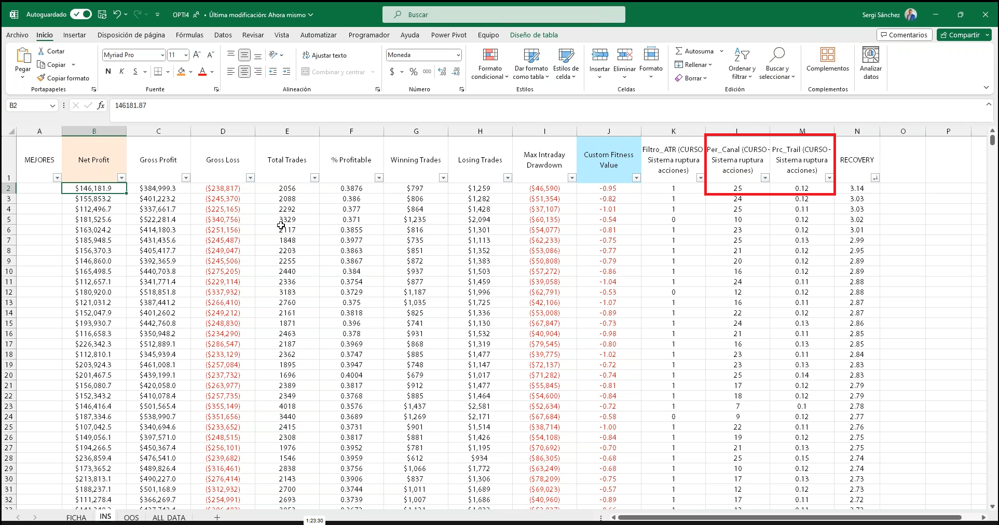
Vamos a ver el mapa de esto in sample. Aquí podemos ver el mapa en 2D mirando a una variable:
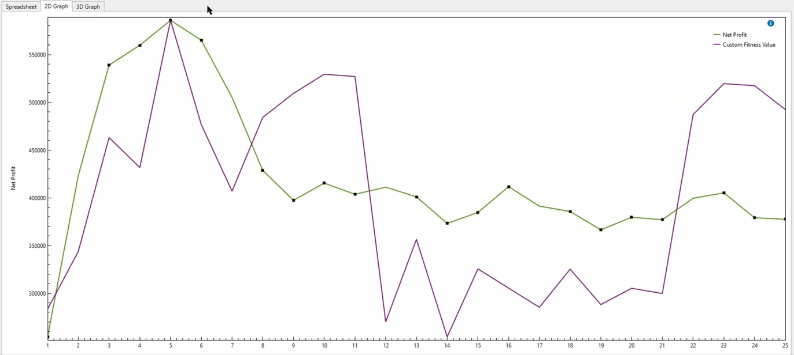
O podemos mirar el mapa en 3D. Esto sería bloqueando el 1:
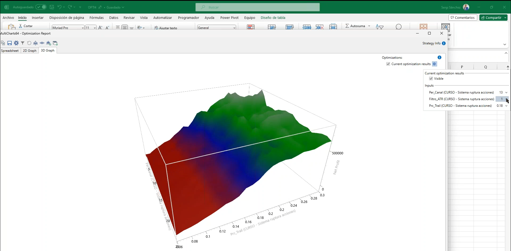
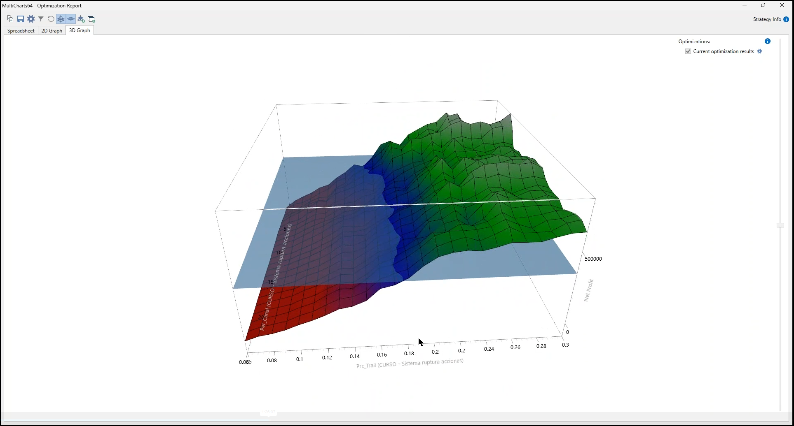
Análisis de estabilidad del canal
Lo que os decía: el canal, veis, el canal es muy estable.
Acordaros lo que hicimos en Excel. Esto es lo que vemos en Excel, que ya os lo comenté. MultiCharts lo hace porque no tenemos en Excel — también lo podemos hacer en Excel, pero MultiCharts lo incorpora, es bastante interesante.
Aquí en las partes bajas del canal, cómo degrada muchísimo; pero a partir de 5 o 6 ya es bastante estable, bastante estable.
Zona del filtro ATR y trailing 0.20
Y la zona del filtro ATR 1 en (0.20) sí que hemos quedado un poco bajo. Parece que es más alto, pero lo que les decíamos de los trades. Pero hay que verlo, hay que verlo: 0.20 está ahí al borde de degradar, está al borde de degradar, está un poquito justito. Pero 0.20 es un poquito justito. Ese es con el filtro activado:
Análisis con filtro desactivado
A partir de ahora con el filtro 0 -
desactivado:
Fijaros: con el filtro desactivado parece que alarga un poco más esta zona de 0.20, parece que la llanura llega un poquito más allá.
El perfil es muy parecido:
Pero ya vemos que toda esta zona 0.20, 0.25, en el caso del filtro y Donchian, pues ya digo desde 6, 7, 8, 10, 20, es decir, es muy estable, es muy estable, tiene pocas diferencias.
El concepto de mapa de optimización
Al final, ¿qué está indicando? Lo que muestra es estabilidad, simplemente es estabilidad, lo que es lo que queremos. Esto es lo que llamamos un mapa de optimización, que hay muchos nombres en la literatura dependiendo de nombres más guays como todos, pero esto es el mapa de optimización de toda la vida que hemos hecho, que nos va a mostrar la sensibilidad de variables. A mí, ¿qué me interesa? Pues variables que sus vecinos estén bien, decir: esto es bien, esto es bien.
Análisis del trailing (Prc_Trail)
Para el lado del canal, para el lado del trailing
Prc_Trail, parece que degrada más:
Pero tiene un punto falso porque, como lo hemos granulado tanto, la mente nos sesga un poco. Por eso viene bien el watermark este:
Para evitar no ver un poco eso, no nos sesga. Pero realmente también es bastante grande la zona, también es bastante grande. Tenemos una zona aquí en el lomo de la parte verde realmente grande. Que sí que quizás más 0.25 habría que estudiarlo mejor. Esto yo me he quedado en el 0.20 por lo que os he dicho, los trades, porque considero tener suficiente margen todavía para caerme mucho. Pero es verdad que 0.25 se ve más cómodo a nivel de estabilidad, se ve más cómodo, y que incluso el 6 lo mismo.
En 6 quizá se ve un poco más cómodo. La zona de 15, de 12, 12, 0.25 quizá parece más estable, parece más estable en este gráfico, de ese orden. Pero bueno, que estamos en el in sample.
Transición al Out of Sample
Vamos ahora al out of sample a ver qué conclusiones sacamos aquí:
Lo que hemos dicho. Aquí parece en el mapa, a mí lo que veo un poquito más estable es esta zona, aquí más o menos es 12, es este 12 por ahí, 16, pero 0.12, 0.11 — claro, es que hay mucho trailing ahí, todos están ahí, es en la zona de recovery alto. ¡No 0.12 no! Perdón, 0.20 pico, perdón, perdón, me equivocaba. Esto es demasiado bajo:
Fijaros que ahí nos están saliendo que los mejores da muy bajo. 0.12
da un recovery — recovery de equilibrio entre retorno
y riesgo — da muy bajo. Que estamos mirando en el profit,
podíamos mirar también recovery. Por el recovery no
porque no lo metí en el modelo. Podría mirar drawdown por
ejemplo, podría mirar el drawdown:
Análisis por drawdown
Ese es el drawdown. Fijaros que cambia completamente: el
profit lo da en la parte alta, el drawdown lo da
bajo, en el 0 a 0.8.
Por eso viene bien el recovery. No lo podía haber metido como fitness pero no lo he hecho, entonces ahora no lo puedo. Lo podía hacer pero lo tendría que hacer, lo podía ver con un archivo, para prepararlo y no lo tengo listo.
Análisis por Sharpe ratio
Lo que sí que podemos meter aquí es el Sharpe ratio, el Sharpe ratio este falso que tenemos. Pero bueno, ya digo que es falso pero sirve un poco:
Veis como al final lo que os digo: en esas zonas sigue tirando más para el profit y aquí se ha igualado más, ya no es tan dramático la caída, porque el riesgo en la parte baja también lo considera bajo cuando lo consideraba. Pero estaría bien verlo en el recovery, que un poco lo vemos aquí, pero eso que os digo, el recovery cambia un poco. Pero por net profit ahí el mapa en el profit está bien, está bien, está bien también teniendo en cuenta dónde saldrá el drawdown. Pero recovery estaría muy bien.
Pero fijaros cómo estabiliza en este Sharpe ratio:
La zona ya se vuelve absolutamente plana, plana, plana, tanto con 0 como con 1 ATR.
Se nota planísima, realmente es enorme. Aquí hay un poco de cráter pero si es ahí de la zona 0.25 es donde empieza la zona plana, lo que pasa que está ahí también lo de los trades.
Bueno, este es el in sample.
Es muy, muy interesante, un poco para que veáis cómo tenemos que analizar los sistemas de este tipo, que al final tienen pocas operaciones. Lo que hacemos es juntar acciones y, a través de ellas — que esto quiere decir que no va a ir óptimamente en ninguna, pero va a tener un buen equilibrio entre todas — por tanto es más robusto. Mucho más robusto adaptarse a todas que adaptarse a una aparentemente mejor. Adaptarse a una, sí claro, si tienes la certeza de que el ajuste va a ser igual en el futuro, sí. Pero esto se explica mucho en la teoría: al final no tenemos certeza sobre el futuro, tenemos que tratar de poner las probabilidades a nuestro favor, y eso pues lo hacemos sobre todo priorizando la robustez, como con este ejemplo que estoy poniendo.
Bien, aquí en el out of sample bajamos número de trades. Y aquí fijaros que el mayor recovery lo da a cero, el canal en uno y 0.11 por decir súper rápido, operando un montón. Pero fijaros que, pues, bajando bastante el rendimiento pero también el drawdown… y cuidado, también el drawdown. Interesante, ¿no?
Aquí en la mayoría, todos, porque como ni fijaros que están en el 1, en el 2, en el canal… el canal súper bajo, hasta que no llegas aquí 11, 5, 20, no empiezan a aparecer algunos otros. Pero realmente lo dan los sets que son muy, muy rápidos.
Consideraciones sobre slippage
Aquí, insisto, que convendría hacer más sensibilidad al slip y tener claro que uno puede ser — dependiendo de qué acción — un poco justo, un poco justo. De hecho, en los futuros muchas veces metemos uno y medio aunque es… depende, porque aquí vamos, compramos en realidad en la apertura. La apertura tiene mucha, mucha volatilidad, entonces no necesariamente el slip de apertura tiene que ser contrario, porque como vamos en ruptura pero de datos de cierre, a veces entra mejor. Es decir, no es un slip como claro, pero hay que contar que de media lo normal es que sea negativo, pero habrá muchos que serán positivos en este tipo de entrada.
Es aquí lo que os digo: ya las optimizaciones como que no son tan claras porque hay demasiadas variables. Y por eso lo que os he enseñado de esto paso a paso. No siempre es mejor de esta manera, no hacerlo de manera independiente, que también se puede hacer y podemos también sacar conclusiones con una optimización global, no está mal. Pero es mejor práctica hacerlo una a una, hacer conceptos independientes: primero el canal para la entrada, luego para la salida.
Mapas Out of Sample
Bien, vamos a ver el mapa out of sample — estamos en
Net Profit:
Fijaros que los vértices, los vértices del trailing
(Prc_Trail) ya se vuelven más ásperos, los vértices más ásperos. Estamos
con el filtro activado pero el filtro activado es parecido:
Cambia un poco pero es parecido. El netProfit cae a
medida que se va para hacer el canal:
Aquí es un poco al revés lo que hemos visto antes: que el canal corto rápido — bueno, también porque está afectado por la última parte de mercado, los últimos años — y pues bueno, nos ha interesado ahí ser más rápido.
Análisis por drawdown en Out of Sample
Aquí si metemos drawdown, vamos a ver el gráfico por
drawdown:
Cómo cambia. Se vuelve absolutamente extraño. Donde quiere el canal,
aquí todo lo contrario: es el canal muy elevado, muy elevado, y con un
trailing muy rápido, ¿de acuerdo?, muy rápido. Eso es lo
que quiere para no tener drawdown.
Lógicamente, a nosotros nos interesa el equilibrio porque solo el drawdown por sí solo pues no aporta.
Sharpe ratio en Out of Sample
Vamos a ver este Sharpe ratio falso que tenemos:
Mucha estabilidad, muy extraño también, mucha, mucha estabilidad aquí pero más riesgo como veis en el canal corto.
Curioso es que línea recta tira aquí con el trailing fijo, porque te saca muy rápido: seguramente sale, vuelve a entrar, sale, vuelve a entrar, sale, vuelve a entrar, y hace muchísimas operaciones. Pero bueno, de esa manera pues ha conseguido evitarse seguramente las correcciones.
All Data: la información de ambos periodosPues tenemos en Per_canal una sola en el 1 y se va
rápidamente ya la zona de 20 del canal, alternando entre 0 y 1, no tiene
mucho sesgo ahí. El trailing más bien bajito, claro, ser más
bien bajito, que un poquito más de rapidez, y con muchísimos
trades. Vamos a ver el mapa:
Aquí estamos ahora con 1 de filtro. Pues vemos inicial
subida por net profit, como pues lógicamente degrada mucho
al principio en ese trailing tan rápido. 0.20 todavía está
justo ahí; parece que 0.25 es mejor profit, se ve cómo se
estabiliza:
Y aquí sí que aparece el canal ya más bajito:
Es el canal, aparece ahí más bajito, está más bien en 4, 5 y 6, un pico pero baja rápido. Y cuidado: bajar rápido y mirar qué peligro tiene a la derecha el cercano. Parece mejor esta zona de 8, 10, porque la zona de 4 está muy sensible, muy sensible, y además con ese trailing:
Ahí al 0.30, acordaros, ya operando poco.
Análisis por drawdown
Si lo vemos en drawdown, es al revés:
Es totalmente inverso. Llanura planísima y con el trailing muy, muy bajo haciendo un montón de operaciones, pero con muy poco retorno como habéis visto antes, tanto en 0 como en 1 de filtro. Entonces pues no equilibra.
Análisis por Sharpe ratio
Aquí el único dato que tenemos un poco para ver mixto es el Sharpe ratio falso:
Este que tenemos es el único que podemos usar un poco de retorno-riesgo de lo que nos permite a nivel de portfolio. A nivel de sistema individual tienen más margen. Y fijaros que aquí pues sí ya vemos que el Donchian da igual casi, que casi da igual qué Donchian cojamos, y que el trailing lo queremos elevado:
Es verdad que aquí sí que el 0.20 parece tener margen, tener tranquilidad, está por aquí. Pero más estable 0.25. Así que viendo estos datos sí que quizá parece mejor el 0.25 que 0.20:
Todo esto es en cuanto a las optimizaciones que ya tenía preparadas.
Al final, un gráfico 3D es una representación de parámetros. Lo hemos visto en la teoría, en Excel, aquí ya lo habéis visto con MultiCharts. Ya os lo dije que teníamos viendo todo de distintas fuentes porque lo que importa son los conceptos. No penséis, no queráis aprenderlo todo en un sistema porque vamos a ver muchos. Al final la idea es una zona estable, es la estabilidad, sin más, no tiene más que otro criterio.
Aquí, en mi opinión, el procedimiento más correcto era, es decir, 1. priemro la optimización 1, 2. luego la opti 2 3. y la opti 3, que finalmente decidimos no aplicar el filtro. 4. Os he querido hacer esta última 4 para que la vierais toda junta, pero es mejor práctica hacerlo de la otra manera, es mejor práctica hacerla.
No nos quedemos ahora con elegir el gráfico 3D exacto, aparte que ahora voy a ir a MultiCharts, vamos a coger más información. En el mapa hay veces que nos servirá muy bien para elegir y hay veces que nos servirá poco para elegir la zona, pero sí para ver por dónde van los tiros. Y luego yo, como ya os he dicho, puedo acabar eligiendo en el Excel — Excel o MultiCharts — en otra herramienta. Me puede servir un poco para ver la zona; elegir el valor exacto a veces no me resultará evidente, hay veces que sí.
El mapa es una excelente herramienta de sensibilidad de parámetros, para ver por dónde van los tiros, pero no es sota, caballo y rey. La elección final, acordaros cuando vimos las clases en la teoría que teníamos un Excel que hacíamos trabajando en in sample, el out of sample, el all data, por un equilibrio de datos y demás.
Esto al final nosotros lo acabaríamos de afinar en Maestro**. ¿Por qué? Porque a mí la información que me da MultiCharts es fantástico porque va muy rápido optimizando, es fantástico porque tiene los mapas, pero los datos que me da del portfolio son pocos. Entonces, como eso Maestro me da más, pues por eso acabo en Maestro.
Vamos a hacer un par o tres de portfolios rápidamente con esta información que teníamos. A ver dónde tengo el Excel. Por un lado tengo este y por otro lado tengo el Excel.
Hemos hecho 4 fichas de optis:
Opti 1
Opti 2
Opti 3
Opti 4
| Optimización | Per_Canal | Filtro_ATR | Prc_Trail | Combinaciones | Descripción |
|---|---|---|---|---|---|
| Opti 1 | 1-25 | 0 (fijo) | 0.20 (fijo) | 25 | Evalúa solo el canal. Salida y filtro bloqueados para aislar el efecto del periodo del canal. |
| Opti 2 | 6 (fijo) | 0 (fijo) | 0.06-0.30 | 25 | Evalúa solo el trailing. Canal bloqueado en 6 (elegido en Opti 1) para aislar el efecto de la salida. |
| Opti 3 | 6 (fijo) | 0.0-2.4 | 0.20 (fijo) | 25 | Evalúa solo el filtro ATR. Canal y trailing bloqueados para aislar el efecto del filtro de volatilidad. |
| Opti 4 | 1-25 | 0-1 | 0.06-0.30 | 1,250 | Optimización conjunta de las 3 variables para generar mapas 3D y visualizar interacciones entre parámetros. |
Miremos que hay cargado en Maestro
La transición desde la exploración visual (mapas 3D) hasta la ejecución técnica final. Se utiliza los mapas de optimización no para buscar “el punto más alto”, sino para encontrar la “pista de aterrizaje” más segura. Este backtest es la validación real de lo que se ha observado en la Opti 1 y Opti 4. El instructor ha decidido “bloquear” estos valores basándose en el Principio del buen vecino.
📏 Principio del “buen vecino”
En un mapa de optimización, un parámetro robusto debe tener buenos vecinos: los valores adyacentes también deben funcionar bien. Un pico aislado es señal de overfitting; el área entre el canal 6 y 15 con trailing 0.20-0.25 muestra una meseta plana y estable.Configuración bloqueada en Maestro:
Per_Canal 6 Entrada:: Elegido por ser
el inicio de la zona estable. Aunque canales más cortos (4-5) degradan
rápido, el 6 ofrece un equilibrio entre rapidez y seguridad.Prc_Trail 0.20 Salida:: El instructor
nota que 0.25 podría ser “más cómodo” visualmente en el mapa 3D, pero
mantiene el 0.20 para evaluar el sistema con un margen de seguridad
razonable antes de que la rentabilidad degrade.Filtro_ATR 0 Filtro ATR:: Se desactiva
porque, al comparar los mapas con filtro 1 (activado) vs 0
(desactivado), la llanura de beneficios es más extensa y robusta sin el
filtro.MMVar_Start 2 Money Management: por
operación. Esto, sumado al trailing del 20%, define un
sistema que “deja correr los beneficios” (filosofía tendencial) pero
corta las pérdidas de forma dinámica según el retroceso del precio desde
máximos.Es un sistema puramente tendencial que deja correr los beneficios hasta que el precio retrocede un 20% desde su máximo. Para evaluar este backtest de 20 años, utilizaremos el factor de recuperación:
| Categoría | Input | Valor | Función |
|---|---|---|---|
| Entrada | Per_Canal |
6 | Periodo del canal Donchian. Calcula el máximo de los últimos 6 cierres. |
| Entrada | Price_Up |
Close | Campo de precio para calcular el canal superior (cierre, no máximo). |
| Entrada | Price_Dw |
Close | Campo de precio para calcular el canal inferior (para cortos). |
| Entrada | Bar_Filtro |
1 | Barras mínimas de espera entre salida y nueva entrada. Evita reentradas inmediatas. |
| Entrada | OperoCortos |
false | Desactivado: el sistema solo opera en largo. |
| Entrada | Filtro_ATR |
0.00 | Desactivado (=0). Si fuera >0, solo entraría cuando TrueRange < ATR×Filtro_ATR. |
| Salida | Salgo_Media |
false | Desactivada la salida por cruce de media central. |
| Salida | Prc_Stop |
0.00 | Sin stop loss fijo (desactivado). |
| Salida | Prc_Profit |
0.00 | Sin take profit fijo (desactivado). |
| Salida | Prc_Trail |
0.20 | Trailing stop al 20% desde el máximo alcanzado. Única salida activa. |
| Salida | Bar_Exit |
0 | Sin salida por tiempo (desactivada). |
| Money Mgmt | Start_Equity |
100000 | Capital inicial: $100,000 |
| Money Mgmt | MMVar_Start |
2 | Invierte el 2% del capital inicial por acción |
| Money Mgmt | MMVar_Profits |
2 | Reinvierte el 2% de los beneficios acumulados |
| Money Mgmt | Min_Size |
1 | Mínimo 1 acción por operación |
| Money Mgmt | Max_Size |
100000 | Máximo 100,000 acciones (sin límite práctico) |
| Money Mgmt | RoundTo |
1 | Redondea a 1 acción (sin lotes) |
Y eso sí, nos va a tardar un poco, nos va a tardar un poquito. Ese problema que tiene Maestro es que esto la verdad que es un problema. Realmente potente pero que técnicamente se ha quedado muy atrás y a nivel de procesamiento de información es súper lento. Otro día también trataremos de enseñaros algo con Quant Analyzer que es un poquito más rápido.
Análisis de exposición
Bien, lo bueno que tenemos aquí es que podemos mirar mucho más. Por
ejemplo, la exposición que hemos ido teniendo:
150 en algún momento, pero algo tengo en el money management
mal.
Aquí tienes el análisis organizado dentro de un bloque visual para tu notebook:
Al observar la Figura 106, el instructor detecta que “algo está mal” en el Money Management.
Voy a usar el de Maestro que por fixed fractional que para acciones va muy bien:
Todo lo demás lo he dejado igual, es la cartera 6, 0.20, 0, que es la que habíamos elegido inicialmente para ir avanzando en las validaciones, pero que la verdad que no tengo claro que sea la mejor. Ahora lo veremos combinado con los mapas.
Ahora está mucho más expuesto, ahora ha ido creciendo un poco, y bueno hemos ido a 1 y medio hasta dos veces de exposición:
Tras corregir la configuración en Maestro utilizando el modelo de Fixed Fractional, los resultados reflejan el comportamiento esperado de un sistema tendencial robusto.
Correlaciones entre acciones
Aquí una de las cosas interesantes que podemos ver es la seleccion de todas las acciones en conjunto:
Aquí si miras por este chart que tenemos, si la miramos 6, 20, sería más o menos por aquí:
Es más o menos, más o menos esta tenemos. Pero si miramos el Excel
puramente por datos, por recovery, realmente le gusta mucho más
aquí. Pero ahí vemos que tanto por Sharpe ratio como por
retorno degrada muy rápido. ¿Quién gana ahí? Y el
drawdown. Lo que pasa que el drawdown, en la
teoría lo hablamos bastante: todos los ratios que tienen el
drawdown en el denominador, al final el que dirige el ratio es
el drawdown, porque como hace de divisor, tira muchísimo del
ratio para él, y acaba viéndose muy afectado. El TSI lo
trata de corregir añadiendo los winners al numerador, que eso
hace que los sistemas que aciertan más, pues suban un poco en el
ratio.
Para el próximo día me gustaría ver en esta cartera qué nos da
Sortino para todo el rato, porque ahí es verdad
que es donde realmente tenemos un buen equilibrio. Vamos a ver si para
el próximo día, casi con total seguridad que lo tendremos, porque hemos
visto el problema que tiene el que tienen ellos preinstalado y lo vamos
a corregir y trataremos de traerlo.
Pero con esa información realmente en este mapa, para eso decía que no siempre vas a poder elegir, es complicado elegir porque realmente casi da igual — bueno, casi da igual me refiero en toda esta zona planicie:
Cambio chart al de net profit
Si luego ya te fijas, el retorno
net_profit es donde ya te vas para
arriba.
Decíamos que interesaba más el trailing, el porcentaje de trailing más a 0.25, porque en el 0.20 incluso estaba justo. Pero bueno, el 0.20 al final acaba, ha sido un poco un equilibrio entre lo que quieren los ratios de drawdown, lo que quieren los ratios de retorno-riesgo — porque al tener el drawdown en el denominador tira mucho de él — y el profit. El profit quiere uno muy elevado.
Ordenación por diferentes métricas
net_profit
Si ordenamos solo por profit, fijaros:
Un poco más grande. Todo el rato 0.28, 0.27, 0.30. He bloqueado que no haya filtro.
drawdown
Si en cambio ordeno por drawdown, lo contrario: 0.7, 0.8, 0.7, 0.6, lo más bajo:
recovery
Si ordenamos por recovery, busca el término medio pero el drawdown tira mucho:
Sharpe ratio
Por eso al final este Sharpe ratio (J), aunque es un poco como os he dicho antes falso, ahí cambia. Es verdad que también da los saltos por retorno, pero hay poca diferencia. Esos valores están todo el rato alrededor del 0:
Todos estos es lo mismo, es prácticamente lo mismo. Todo esto hay muy, muy poca variación, en el dato de 6 y 10 pero también bastante elevado el trail. Pero ya digo, con muy poca variación, pues al final nos hemos quedado con un compromiso.
Comparación de portfolios con diferentes configuraciones :
Vamos a ver, vamos a hacer rápidamente porque es un buen ejercicio. Hemos hecho este del 6, 20 y ahora vamos a ver todos estos.
Net ProfitVamos a ver por ejemplo el que mejor retorno da, es el canal primero
y ordeno por net_profit:
Sería 6, 0.27, 1. Lo voy a poner, que es bastante
parecido al que voy a dejar.
La gestión monetaria igual para no tocar nada:
Dejamos toda la gestión monetaria como hemos hecho el otro para poderlos comparar.
drawdownEl que menor drawdown obtiene (sort Excel por
drawdown) que es muy raro ya os lo digo. Sería por
canal 25, ahora viene el filtro 1 y luego el
trailing 0.07:
Sharpe ratioEl que mejor Sharpe ratio tiene, que es 4,
1, 0.24:
Ahora toca el de 1 que era el raro:
Luego los comparamos:
Limitaciones de Portfolio Trader y soluciones
Esta optimización de Portfolio Trader tiene ese problema: da pocos datos, entonces los tienes que construir tú. El problema es lo que os digo, que al ver este problema con Sharpe ratio no hemos podido utilizar el Sortino que usamos para las estrategias sueltas, entonces hay que hacerlo para portfolio, porque pensamos que valía pero hemos visto que no. Entonces hay que hacer el Sortino para portfolio.
Y a veces lo que hemos hecho es hacer varias pasadas. Lo bueno es que modificar es muy rápido, y como el custom fitness es una fórmula que tú puedes programar, al final le puedes meter varios. Pasadas, recoges varios: uno pues le pones Sortino, Sharpe ratio, y el que quieras. Los pasas todos al Excel, y entonces ahí es donde ya tienes tú para hacer distintos cálculos o ratios que puedas calcular directamente en el Excel.
De momento solo puedo calcular el recovery, utilizar este Sharpe ratio que insisto que no es el valor correcto pero sí que es extrapolable para hacer la selección.
Comparación de rendimiento: Maestro vs MultiCharts
Todo esto es al final simplemente: estoy haciendo todo el portfolio con unos sets concretos.
Trataré de dejarlo mañana a ver si me acaba, porque ese fin de semana he intentado dos veces que Maestro me hiciera toda la optimización completa. Pero esta optimización que hemos hecho en MultiCharts también se puede hacer. Pero en MultiCharts he tardado unos, en hacer la larga de esto tardado unos 15 minutos, y Maestro se ha colgado después de llevar cada una de ellas como 20 pico horas y no había acabado. Esta es la relación, y era lo mismo, en verdad era lo mismo: mismo código, todo igual. Y esa es un poco la comparación, ¿no?
| Plataforma | Tiempo optimización completa | Informes |
|---|---|---|
| MultiCharts | ~15 minutos | Básicos a nivel portfolio |
| Maestro | +20 horas (sin completar) | Muy completos |
Entonces, que ya os lo había comentado alguna vez, es un drama de Maestro. Pues es, la verdad que es que ya digo, es súper potente. Luego a nivel de informes es brutal, ahora veréis todos los datos que nos saca, está fantástico. Y los hemos revisado — bueno hay uno por ejemplo que no está bien, ya lo pasamos — pero estos sí que están bien. Y bueno, pues es la lástima.
Comentaba Frank que :
la selección del filtro ATR volatilidad lo he hecho entre 0 y 1, pero que 1 y 4 tenía mejor, que decir, que estaba una zona robusta de estar, sería mejor.
Pues sí, pero ahí a mí me parece, podríamos trabajarlo un poco más, pero me parece sobreoptimizarlo, me parece demasiado. Los filtros a mí de norma me cuesta meter filtros, y a este tendencial para la ganancia que he visto, ya ya comentado, creo que no se lo metería, no se lo metería. Pero encima si lo metes tiene que ser o no optimizado o muy poco, ¿sabes? Es decir, esa, el filtro es la manera de sobreutilizar más, porque es cuando tú ya tienes tu sistema, vamos a suponer 6, 0.20, vale, venga, y ahora le meto un filtro que me va a eliminar los malos, hostias, eso dicho así ¿no te suena a una cosa fácil de sobreoptimizar? Porque al final le vas a quitar los cientos, tres cientos o cientos, es igual, ¿sabes?, que está muy bien, no quitar la parte mala, pero el problema es que estás aumentando el riesgo de que sea una sobreoptimización. Aunque en el mapa parece robusto, aunque en el mapa parece robusto, que entiendo lo que dices y tienes sentido, no te digo que no, pero le daría más vueltas, ¿por qué le daría más vueltas?
Y ya digo, granularlo tanto explico, es como el filtro, no 0.20, ya te digo yo lo he optimizado los todos en 0.25, porque vierais el mapa bien granulado, pero realmente tampoco me gusta, es decir, en un sistema en diario con mil y pico trades de verdad prefiero ir de 0.5 en 0.5, ¿sabes?, es decir, ir a buscar tanto el detalle, explico, 0.21, 0.22, 0.23, ¿me explico? Es decir, al final recuerda que lo que estás viendo es lo que ha ido mejor en el pasado, entonces ya te digo, al final elegir siempre el mejor,,, UHMMM ya te digo,,, el tema del incremento es una cosa que es quizá la que más… Tú cuando tienes un canal, una media, esto es muy evidente porque va de uno en uno, vale, aquí sí que no hay mucha historia, pero cuando tienes filtros y cosas así que tú puedes hacer 0.1, 0.2, pero si por puestos ya podríamos hacer 0.01, 0.02, 0.03, y ¿por qué no 0.0001, 0.0002?, ¿sabes?, ¿me entiendes? Hay que cortarlo. Ya sé que tenía muchos trades, pero el filtro a otro no tenía tantos, o sea de cambiar el filtro has cambiado 300, o sea eso, el sistema tiene los 2400 con el filtro en 0 o el filtro en 1, y de 0 a 1 cambia 300, y de 1 a 4 igual cambiaba 200, ahora lo miramos.
El que tú dices es el de la línea verde, que te ha gustado es este
como en verde, vale, este a ti te ha gustado porque bueno te ha dado un
recovery bastante más elevado, mejorado, ha mejorado sobre
todo el porque tienes ahí 1.430, este sí que te ha bajado el
drawdown:
Pero de este (liena naranja, el que hemos elegido 6) a
este (línea verde el que le gusta 4) tienes 100
trades de diferencia entre ellos, o sea poner ese filtro o no
ponerlo son 100 trades de diferencia, y gana un poquito más y
baja el drawdown, y dices “está muy bien”, bueno sí claro, si
de aquí cinco años eso se mantiene, es verdad. Ahora, ¿eso es seguro que
se mantendrá? No, la realidad es que eso no es seguro. “Bueno, ¿tampoco
no es seguro el cero?” Pues decir… bueno ya, pero el cero le
he quitado un grado de libertad. Al final, no he añadido
variabilidad a la que yo meto Filtro_ATR = 0, estoy
metiendo una, o sea estoy metiendo una condición más al sistema, porque
este Filtro_ATR = 0 no trabaja, estoy ignorando el ATR. Yo
aquí le estoy ya asumiendo que cuando el ATR de un día con el ATR de un
mes por multiplicado por un 4 sea mayor no opere, y de esa manera le he
quitado 100 trades, que es un trade por acción de
media, trade por acción.
Entonces… no, no es una certeza, es que esto va así, o sea no es una certeza, o sea no es que yo te diga esto seguro que luego no irá, no, para nada, no te lo puedo decir, no sería serio decirte eso, no lo sé. Seguro, pero estoy añadiendo un grado de incertidumbre más, para el beneficio que me da no me renta… ¿me explico? Es decir, para el beneficio que me dan, no me renta, a mí no me parece suficiente para añadir grados de libertad, para añadir posibilidades al sistema de oscilar. Siempre que añades inputs, como mínimo añades una, y a veces son varias, porque es la condición, o sea es el valor del ATR y que ATR de hoy sea menor que el ATR mensual, eso no es un grado de libertad, son como mínimo dos. Para añadir dos, necesito que me convenza mucho.
Pero de todas maneras lo estudiaría más, decir, miraría esto, miraría
esto en el gráfico muchas acciones, y la otra cosa que ahora no hemos
hecho es esa… que ahora lo vamos a hacer en Maestro, lo miraría
un poco y un poco, pero también lo miraría en el gráfico. Nosotros
miramos mucho, pero miramos mucho, ahora esto lo miraría en el gráfico
en distintas acciones, miraría el gráfico, ya lo haremos, ya lo haremos,
aunque no lo hagamos hoy lo haré, porque a esto tengo que volver, para
necesito ver un Sortino ahí para estar más cómodo,
¿entiendes? Entonces necesito verlo, lo veré, pero el filtro no es
concluyente, ni granulándolo al 1.4. Si el filtro…
¿Si el filtro quitara 500 trades* sería más válido, entiendo?*
Sí, sería más válido, sí, sería más válido, sería más válido. En el caso de los filtros es un poco al revés, y por eso es como lo diría, no es que sea contraintuitivo, es contraintuitivo para lo que he explicado. Me estás diciendo siempre cuantos más trades mejor, vale, pero ahora me dices que si el filtro quita más es mejor, ¿y en qué quedamos? Bueno, las dos cosas son verdad, las dos cosas son verdad. Quiere decir que para que el filtro me quite, tengo que tener muchos antes, si no, ya no me vale. Es decir, si tengo mil, ya no filtro, ¿me entiendes?, ya no filtro, ya no estoy suficientemente cómodo para que eso baje más, ¿me explico?
Entonces pero evidentemente el filtro valida, el filtro valida quitando, el filtro valida actuando. Las reglas para evaluarlas tienen que implicar cambios, si no implica cambios no está validada, y la significación pasa por ahí, vale, porque cada regla tenga un número de trades donde actúen y en distintos momentos, distintas condiciones de mercado, etcétera. Significación y representatividad, significación y representatividad, significación la dan las estadísticas, representatividad la da actuar en distintos mercados, vale. Por eso que ahora lo hemos metido 20 años a esto, para ver esta curva en 20.
📦 Canal de Donchian
Entender la sobreoptimización (o overfitting) en el trading algorítmico es, en esencia, distinguir entre la señal (el patrón real del mercado) y el ruido (movimientos aleatorios del pasado que no se repetirán). El instructor plantea un debate clásico: ¿Vale la pena añadir un filtro para ganar un poco más de rentabilidad a costa de añadir complejidad?
1. El Problema de los Grados de Libertad ()
Cada vez que añades un parámetro (un filtro ATR, un valor de trailing,
etc.), estás consumiendo Grados de Libertad. En
estadística, esto reduce la potencia de tus pruebas.
2. Granularidad y el “Efecto de Búsqueda”
El instructor critica el uso de incrementos muy pequeños (0.1, 0.2 o
incluso 0.0001).
3. Referencias Científicas sobre
Sobreoptimización
Si deseas profundizar con rigor académico, estos son los pilares de la
literatura financiera actual:
A. El Sesgo de Selección (Data Snooping Bias) Propuesto por Halbert White (2000) en su obra “A Reality Check for Data Snooping”. Concepto: Si pruebas suficientes variaciones de un filtro, por pura probabilidad estadística, una de ellas parecerá “ganadora” en el pasado, aunque no tenga valor predictivo. Es lo que el instructor llama “ir a buscar tanto el detalle”.
B. La “Falsa Transmisión” en Finanzas Bailey, Borwein, López de Prado y Zhu (2014) publicaron “The Probability of Backtest Overfitting”. Referencia científica: Demuestran matemáticamente que cuanto más corto es el histórico y más combinaciones pruebas, mayor es la probabilidad de que tu Sharpe Ratio sea un espejismo. Coincide con la insistencia del instructor de mirar 20 años de datos para buscar representatividad.
C. El Criterio de Información de Akaike (AIC) Es un método científico para seleccionar modelos Regla: El AIC penaliza la adición de parámetros. Si añades un filtro que mejora el beneficio pero aumenta la complejidad del modelo (añade grados de libertad), el AIC te dirá si esa mejora es “real” o si solo estás ajustando el modelo al ruido pasado.
Backtest 1-0-0.12
Bien, aquí tenemos un resumen:
Vale, de entrada aquí ratios que no valen para nada, el esto que veis aquí si lo veis es el total retorno partido por máximo drawdown, aquí no vale para nada, aquí no vale para nada, porque bueno vale, bueno habiendo hecho gestión monetaria vale un poco, porque al final es lo que os decía antes, es decir, el drawdown no lo puedo meter en porcentaje, que es verdad que aquí como yo he regulado en 100 acciones y vengo con gestión monetaria, que es muy importante, muy importante, ¿por qué es muy importante? Porque si venís aquí a ver la lista de trades:
Pues yo al final he ido exponiendo. Si tú multiplicas, por ejemplo, da igual, esta acción, hemos comprado 60 por 33.14, al final he comprado 1988 dólares, que es más o menos el 2% que habíamos hablado al inicio, 2000 dólares, vale.
Entonces si yo siempre he ido exponiendo esa misma cantidad, pues es mejor, sería mejor el porcentaje, sí, pero como yo siempre voy exponiendo, bueno, un 2% de la cuenta, ya estoy haciendo porcentaje, porque ahora tengo 100.000, 2%, pero cuando tenga 200.000 pues será el doble, pues ya voy exponiendo siempre una cantidad que depende del porcentaje, gracias a ese 2%, entonces las cantidades están más o menos ecualizadas. Pero como lo mismo que se ha hecho en el Excel os he dicho, no está mal, recovery sirve, pero sería mejor aún en porcentaje, sería mejor.
Vale, pero aquí como ya tenemos esa, tenemos shad, el
RR calculado, tenemos algunos datos más que nos sirve,
tenemos el drawdown real (79.19%) Aquí muy
elevado, ¿por qué?, porque hemos metido la exposición a casi el 200,
hemos metido un poco elevado la exposición, pero aquí sí que tenemos el
triple R Return Retracement Ratio a
0.34.
Backtest 4-1-0.24
Return Retracement Ratio a 0.92, fijaos
cómo cambia:
Compounded anual return
Backtest 25-1-0.07
Return Retracement Ratio a 0.006:
Compounded anual return 0.08% -> ahora analizamos
Backtest 6-1-0.27
Return Retracement Ratio a 1.02. Los
cambios son bestiales.
Compounded anual return 29%
Backtest 6-0-0.20
Return Retracement Ratio a 1.02
Compounded anual return 25%
¿Error detectado?
¿Cómo es posible un Total Return ($18.953) tan bajo con
el 25 1 0.07? no está bien porque
operamuy poco….
Por mirar un poco en el sumario
En el sumario, fijaros, simplemente profit factor, aquí tenemos 1.39:
Backtest 1-0 -0.12
Profit factor 1.39
Backtest 4-1-0.24
Profit factor 1.59
Backtest 25-1-0.07
Profit factor 0.02
Backtest 6-1-0.27
Profit factor 1.73
Backtest 6-0.20 Profit factor 1.47
Tanto por profict factor, como por R, incluso por Sharpe, el más
parecido es el 6-01-0.27, es el que daba más profit.
| Backtest | Profit Factor | Sharpe Ratio | Avg Win / Avg Loss (R) |
|---|---|---|---|
| 1-0-0.12 | 1.39 | 0.0463 | 2.06 |
| 4-1-0.24 | 1.59 | 0.0577 | 2.07 |
| 25-1-0.07 | 1.02 | –0.0002 | 1.79 |
| 6-1-0.27 | 1.73 | 0.0598 | 2.04 |
| 6-0-0.20 | 1.47 | 0.0539 | 2.03 |
✅ ¿Por qué la configuración 6-1-0.27 ofrece beneficios
altos?
La estructura de esta combinación encaja de manera natural con el
comportamiento de un sistema Donchian aplicado a acciones en gráfico
diario.
2. ATR = 1 → filtro suave que no elimina las buenas
entradas
Con un canal corto, ATR=1 actúa como un filtro
de calidad. Con un canal largo, ATR=1 se convierte en un filtro
que destruye señales.
⚠️ ¿Cómo es posible un Total Return ($18.953) tan bajo con el
25-1-0.07?
La clave está en cómo interactúan los tres parámetros: 25 – 1 –
0.07
La combinación es por naturaleza muy poco adecuada para un sistema
Donchian tendencial aplicado a acciones. Donchian funciona bien cuando
detecta rupturas tempranas, no rupturas tardías. Con
veinticinco días de canal, el sistema entra cuando el movimiento ya está
maduro o directamente agotado.
2. El filtro ATR = 1 elimina muchas entradas
buenas
Este filtro exige que la volatilidad de hoy sea
menor o igual que la volatilidad media del último mes. En muchas
acciones del Nasdaq, los días de ruptura auténtica suelen ir acompañados
de un repunte de volatilidad. Como consecuencia, el filtro impide entrar
justo en las rupturas más potentes.
3. Un trailing del 7% es demasiado ajustado para un sistema
diario
Un trailing tan estrecho salta con facilidad ante
cualquier retroceso normal del precio. Los retrocesos del 3% al 6% son
habituales en acciones; con un trailing del 7%, la salida se produce
antes de que la tendencia logre desarrollarse.
4. La interacción entre los tres elementos es especialmente problemática
| Canal 25 | Entrada tardía |
| ATR = 1 | Filtra las rupturas fuertes (las mejores) |
| Trailing 7% | Sale demasiado pronto |
Vamos a ver el siguiente día si podemos sacar el Sortino vía portfolio, porque no está sacado.
Backtest 6-0.20 Profit factor 1.47
Aquí 6-0.20 ya el Sharpe ratio ya lo tenemos
positivo, y aquí lo que pasa que realmente la exposición es un poco
elevada, teníamos que haberla regulado más. Hemos llegado a exponernos
al 200%, dos veces nos ha apalancado hasta dos veces,
claro tenemos niveles de drawdown muy severos a nivel de portfolio, tenemos drawdowns bastante elevados:
| Backtest | Profit Factor | Sharpe Ratio | Avg Win / Avg Loss (R) | Max Drawdown (%) |
|---|---|---|---|---|
| 1-0-0.12 | 1.39 | 0.0463 | 2.06 | –79.10% |
| 4-1-0.24 | 1.59 | 0.0577 | 2.07 | –61.39% |
| 25-1-0.07 | 1.02 | –0.0002 | 1.79 | –29.83% |
| 6-1-0.27 | 1.73 | 0.0598 | 2.04 | –60.14% |
| 6-0-0.20 | 1.47 | 0.0539 | 2.03 | –63.58% |
Recordar que no estamos evaluando el portfolio para operarlo así, estamos evaluando la idea, evaluando la idea, y luego ya decidiríamos cómo lo operábamos.
Aquí tenemos muchas acciones en negativo lógicamente. Luego una vez el sistema está validado yo luego lo operaré a lo mejor no necesariamente las 10 mejores, pero así que serán de las mejores, de acuerdo. Es decir, al final yo valido la idea en las 100 acciones porque eso me da mayor robustez, digamos que la idea la pongo más a prueba en acciones, incluso no han ganado:
Backtest 6-1-0.27 Profit factor 1.73 en
Portfolio Trader
Incluso aquí, incluso en el Portfolio Trader, que no es tan, no me dará tanta información, pero este mismo mirar para que veáis la comparación que es interesante de ver, pero pongo aquí:
Y ahora si le hacemos backtest, y aquí ya veréis que cambia mucho la cosa, aquí también tengo el money management a nivel portfolio, 2 por ciento, está bien:
Aquí ya hemos controlado mejor porque hemos controlado la exposición, claro también tiene un factor de 1.46 y ganar 52 mil poco, claro, todo lo uno depende del otro, uno depende del otro. Pero aquí por ejemplo, mirar lo que os quería enseñar antes, la correlación de los retornos mensuales, de acuerdo, de todas las 100 acciones.
Fijaros que hay datos en negativo porque hay acciones que pierden, que pero que siendo todo en el Nasdaq 100, claro es que Apple con Microsoft tiene 0.66, Apple con Google 0.48, con Amazon 0.55, con Nvidia 0.32, con Facebook 0.29, que son acciones directoras, de acuerdo, están ordenadas, están ordenadas por capitalización, vale, que es decir que todas las que veis primeras son acciones súper top para elegir. Y fijaros su nivel de correlación, bajar aquí no sé si se llega a ver bien, esperaros que os voy a poner el foco, lo que sea mejor con el foco es ahí. Fijaros, ahí veis Microsoft, mirar la columna para abajo, es 0.66, 0.67, 0.53, 0.69, 0.56, 0.55, 0.40 con Tesla pero 0.48, 0.36, 0.39, 0.68, 0.51. Es decir, es el mismo sistema en el mismo timeframe, vale, sus correlaciones mensuales son relativamente moderadas, pero no son 0.8, 0.9, está bien, tiene una diversificación moderada que es muy, mejora lógicamente.
Entonces aquí fijaros que ya con una exposición más controlada tenemos datos de retorno poquito más estables:
Es una curva muy muy justo, bastante virgen, pero es un sistema muy
justo, pero con este nivel de profit factor, ese nivel de
retorno, acepta algo de apalancamiento y tiene algo de
mejora por delante.
Además le hemos cargado poco size.
Vamos a meter desde el 2007 al 2%, mira vamos a meter un 3% de Max capital risk y nos va a poner un poquito más:
Y veis, ya tenemos un Sharpe ratio calculado bien a 0.29, Sortino 0.45, es decir el Sharpe ratio annualized al uno es un Sharpe ratio bajito, es un sistema justo, pero bueno poco a poco lo podemos hacer crecer el sistema. De hecho este set es el de mayor retorno, no es el que mejor equilibra.
de hecho, este set simplemente es el de mayor retorno, no es el que mejor equilibra.
Aquí ahora podíamos mirar varios, pero y hemos mejorado un poquito:
Ha sufrido bastante aquí porque es verdad que con este nivel de ratio del trailing pues le cuesta salirse. Esto ya os digo, había sets, este set tiraba más para el retorno, pero teníamos alguno que tiraba un poco más al equilibrio.
Aquí podíamos encontrar alguno que mejorara esta caída del 2022 a cambio de un retorno un poco peor, es un poco la que hay. Que fijaros, hemos ganado un poco de histórico como tenemos ratios negativos en varias acciones:
A los ves, en Facebook perdemos dinero, en Google, en una de las Google también:
Porque al final tienen muy pocas acciones con este nivel de
exposición, con este canal y con este ratio,
realmente opera muy poco cada una de las acciones, de acuerdo, pero muy
poco. Por eso al final nos vemos obligados a meter pues un análisis
global que al final nos pueda meter más acciones, para que al final nos
pueda meter 1.100 trades desde el 2007, desde 2007 nos mete
1.100 trades:
Aquí tienes el <div> con la conclusión final sobre
la necesidad de aumentar la muestra de operaciones y la estrategia
técnica para lograrlo, basándome en el análisis de robustez del
instructor:
La validación de un sistema tendencial “justo” depende de la significación estadística. Un sistema que opera poco de forma individual corre el riesgo de ser víctima del azar o de rachas negativas en activos específicos (como se ve en Facebook o Google).
¿Por qué necesitamos más trades?
¿Cómo conseguirlo?
Todavía no dejamos un set elegido porque me gustaría poder
ver una optimización en el chart para el
*Sortino* de portfolio, que aquí sí que lo veo pero no lo
veo optimizando, porque es una cosa bastante extraña por parte de
MultiCharts. Ahí en los foros de MultiCharts están con
varios mensajes al respecto, es decir, que tienes Sharpe ratio
metido como función, tienes Sortino metido como
fitness, y que a mí no lo tienes como fitness ya por
defecto de optimización, es un poco extraño. Es porque si ya lo tienes
metido dentro del programa, o sea lo das, ese ratio lo das, lo puedes
perfectamente usar como ratio de diana, porque es un dato que estás
calculando. Si tú me lo estás calculando y aquí, pero curiosamente lo da
para el performance pero no lo da como ratio de diana, lo
tienes que meter tú por código, y el que tienes metido por sistema nos
sirve por lo que os decía, tienes que hacer específico de
portfolio, de acuerdo. Entonces tienes ese problema, pues es un
tanto curioso, pero así es.
Para la próxima sesión vamos a tomar una decisión respecto a este sistema tal como está, es decir, en una configuración de full tendencia. Quien quiera —y quien tenga los recursos, el software y los conocimientos necesarios— también puede hacer alguna propuesta adicional. Es súper bienvenida como ejercicio para casa, porque quiero empezar a mandar algunos.
La regla de entrada es simplemente esta
if Close > Highest(Price_Up, Per_Canal)[1] then, no
tiene más:
// TÍPICO SISTEMA DE RUPTURA: el cierre supera el máximo del CIERRE DE 20 barras
if Close > 0 and Condition1 and MP <> 1 and (BarsSinceExit(1) >= Bar_Filtro or TotalTrades = 0) then
Begin
if Close > Highest(Price_Up, Per_Canal)[1] then
Buy Contratos contracts Next Bar at Market;
End;Es decir: cierre por encima del canal, que está calculado
por cierres y por el número de velas. En la apertura de la siguiente
vela compra. Para evitar compras en acciones con cierres negativos,
hemos añadido este Close > 0, porque en muchos años
puede pasar. Ese Close > 0 funciona como filtro: si vale
1, actúa como filtro; si el filtro vale 0, es true y no
actúa.
También comprobamos que no esté comprado (MP <> 1)
y que se cumpla el Bar_Filtro, que es simplemente una
regulación para evitar reentradas inmediatas: que al menos haya pasado
una vela desde la última salida para que no compre en la misma vela en
la que cerró.
La condición TotalTrades = 0 está puesta para permitir
la primera operación del sistema, porque si no, al requerir que
MP <> 1, no compraría nunca en la primera barra. Es
una conexión típica que se suele incluir para que el sistema pueda
arrancar correctamente. Pero, en esencia, la regla de entrada es esta y
no tiene más.
El trailing stop que actúa es este de aquí:
// Trailing Stop
If Prc_Trail > 0 Then
Begin
If MP <> 1 Then
Trailing_Long = 0;
If MP <> -1 Then
Trailing_Shrt = 99999;
Begin
if MP = 1 then
begin // Para posiciones largas
Trailing_Long = maxList(Trailing_Long, High - (High * Prc_Trail));
Sell ("Trai_Lng") next bar at Trailing_Long stop;
end;
if MP = -1 then
begin // Para posiciones cortas
Trailing_Shrt = minList(Trailing_Shrt, Low + (Low * Prc_Trail));
BuytoCover ("Trai_Shrt") next bar at Trailing_Shrt stop;
end;
End;
End;Si el Prc_Trail es mayor que cero, se inicializa la
variable y ya está. Cuando el sistema está largo, el trailing
se actualiza como el valor máximo entre:
High) menos ese máximo
multiplicado por el porcentaje del trailing.Ese cálculo define el precio del stop dinámico. Con esta condición te aseguras de que el trailing solo pueda subir; nunca baja. No está basado en ATR —aunque podría hacerse así—, pero en este caso hemos querido hacerlo mediante porcentaje porque es mucho más sencillo. Más simple no puede ser: es un trailing stop por porcentaje totalmente directo y funcional.
6-0.20Vale, y visto aquí por ejemplo en el gráfico de alguno de ellos para acabar viendo alguno, lo vemos aquí en un momento en cualquiera, ahora estamos viendo 6 con el filtro en 1 y 0.27 (todavía opera menos):
Ya veis, claro, es un sistema que deja correr:
Deja correr, se ha comprado, deja correr, es un sistema de muy largo plazo, por eso la única manera de evaluarlo es metiéndolo en varias acciones, de acuerdo, y que cuando el mercado va a entrar lateral pues sufre, sufre mucho.
Porque aquí fijaros, acaba entrando otra vez, el canal no está bien ajustado y vuelve a entrar:
El canal no está bien, no está bien, porque no está en 6, está en
Per_Canal 20:
lo cambio
6 es muy rápido, entrar muy rápido, esta es la diferencia, habéis visto que había varios, varias zonas, esta es la versión súper rápida de entrar, habían otras versiones, hay que acabar de elegir.
Aquel que quiera proponer, con el código del sistema que le daremos y demás, alguna que nos lo envíe, nos lo puede enviar, lo voy a poner el disco, lo puede enviar al email, y yo me comprometo a responderle.
Otra cosa que queda pendiente para el día siguiente, vamos a hacer esto, acabar de tomar una decisión, acabar de tomar una decisión con nuestro Sortino de portfolio, decisión de parámetros, de esta versión como está.
Esto es lo que os quería poner para casa, unido con esto, aquel que quiera en este setup, en este código, ¿qué haría con el lado corto? Si alguien quiere proponer o quiere trabajarlo, o simplemente puede proponerlo bien trabajándolo, o bien filosóficamente, podemos hacer las dos cosas, me valen las dos cosas. Aquel que quiera trabajarlo porque puede hacerlo, ya que lo haga. El que no quiera trabajarlo porque no es capaz, simplemente que lo conceptualice y que diga “pues mira, yo creo que en los cortos en esta versión haría esto, esto, esto y por qué”. En acciones, en este mismo setup, en acciones, ¿qué hacemos con los cortos?
Y luego ya lo que vendría es lo mejor, tiene que ver con esto, vale, es que ¿qué otras variaciones hacemos? Este comentamos que el Donchian es un mecanismo de entrar en tendencia, pero es un mecanismo muy útil para hacer breakout, entonces esto ahora con lo que tiene ya en el código se puede hacer breakout, se puede hacer un breakout, ¿cómo haríamos?, sobre qué, tratamos de desarrollar.
Este serían un poco las cosas pendientes respecto a esta estrategia, que deberíamos de liquidarlo ya para entrar en otra cosa.
No le metamos más conceptos, ya sé que le podríamos meter un ATR, le podemos meter mil cosas, ya lo haremos, de acuerdo. El sistema este lo vamos a dejar así, con un Donchian sencillito, entre en la versión tendencial, que es muy mejorable, lo vamos a dejar así, y cortos, y haremos un breakout con este código también, vale, y a partir de ahí seguiremos en otras cosas.
¿Se puede aplicar trailing stop y stop loss a la vez asegurando una pérdida fija?
Sí, sí, sí, es posible y tiene sentido, pero en este caso, y el sentido, a ver, depende del tipo que vas, es realmente, digo, depende del tipo que vas, o sea, en el trailing que hemos puesto nosotros, en el trailing que hemos puesto nosotros, mucho mucho sentido no tiene, vale, porque ya hemos puesto, porque hay muchos, el concepto clásico de trailing hay muchas veces que se activa a partir de cierta cantidad, pues en esos casos mucha gente sí que usa un stop, un stop de seguridad podemos decir. Acordaros cuando hablamos un poco del stop de seguridad, ¿no?, y que entra ya nada más abrir, pues un poco por si se lía, ¿no?, es que me saque, no, pues no tener que, no me saca.
Pero en nuestro caso el trailing se activa desde la entrada, en el momento del cálculo se calcula del cierre anterior, y en el momento que el precio que acaba la barra en que ha entrado, ya entra en juego el valor máximo que haya, o el cierre anterior o el máximo que haya hecho ese día, el máximo que haya hecho ese día actúa de trailing, y entonces ya tienes trailing. Claro, que es un 20 por ciento, por eso has visto algunos aquí como este, o bueno incluso otros peores, que se va, se va para abajo y a tomar viento, a tomar viento.
El problema de los tendenciales puros es este, que si tú quieres un tendencial puro y quieres tres, como esta locura de que te pilla toda la subida no, esto, pues claro, solo ahí dejándolo, dejándole, tragándote estas cosas:
También ese problema, porque si yo le pongo una salida por tiempo, que va muy bien y evitará mucho esto, que evitará también que pille el recorrido. Por eso decía que un tendencial es bastante desagradecido, es muy desagradecido, te decía, el puro. Luego están los breakout, que también son tipo de tendencial, que ya se manejan mejor, y que este lo haremos también en mercado, vale. Entonces conceptualmente sí se puede, pero en esta configuración tal como está no tiene demasiado sentido porque ya actúa siempre.
Este lo que pasa que le da mucho margen, le da mucho margen, pero este desde el primer momento que entra ya va calculando, aquí le calcula un 27%:
Pero no ha saltado. Ahora, para que veas, este aquí le pongo 10 por ciento y seguramente salta:
Salta ahí, salta aquí, salta aquí, es un poco la idea, ¿no? Es claro, yo lo tengo siempre, siempre calcula, este que hemos hecho nosotros. Imagínate que le pongo 0.05, no va a parar de salirse todo el rato:
Ves, ya cambiado completamente el sistema, es otro sistema, no para, entrar, a salir, a salir, a salir, a salir, a salir, que cuesta mucho porque el precio va haciendo sus oscilaciones, y alguna vez, oye, y ahora un trocho grande, pero la mayoría de veces no, porque se va a salir todo el rato, y ahí está el equilibrio de los tendenciales. Este es el problema en los tendenciales, que para pillar largos recorridos y no caer en esto hay que dejarlo sufrir. Claro que hay maneras de utilizarlo más para evitar las otras, pero un tendencial puro es uno de los casos de trailing, aunque ya os lo comenté en la teoría, es verdad que trailing acopla bastante, acopla bastante, pero en porcentaje acopla menos. Entonces acopla bastante quiere decir que lo vas a, lo metes ahí, pero 25 y luego empezarás a ver que a veces ha degradado, ha degradado.
Es que el trailing hay veces que se va directo a pérdidas igual por el cierre o algo y hace más de lo configurado
¿Que te pierde más de lo que tienes esperado?, ¿qué decir? Depende cómo lo tengas votado. Si lo pones desde el principio, si lo pones en principio que esté siempre puesto en mercado, al final claro te puede pillar un gap. Aquí en este caso vas a tendencia y te vas a tragar, claro, los resultados. El otro día lo hablaba en el directo del jueves, había no sé qué acción había caído 15, pues te lo tragas, claro, esto hay en acciones, tienes ese problema. Aquí muy diversificado, y porque te lo tragas en tendencia, tienes el problema.
Pero ya veremos otro tipo de estrategias, cuidado, es decir, al final ahora estamos viendo esta pero que tiene su lado bueno y su lado malo, al final. Y por eso la idea es tener varias, tener una así, tener otra que te lo compensa, y esta te queda enganchada pero a lo mejor tienes otra que había iba corto en petróleo y no sé qué, hay que ir diversificando.
Los tendenciales ya digo que son, de hecho cuando uno no tiene mucha experiencia, son sistemas bastante poco llevaderos, vale, lo hablamos en la teoría. Normalmente es más tendencial, hay más llevadero un sistema antitendencial, ¿por qué?, porque el antitendencial no deja, no tiene colas largas. En cambio los tendenciales, o sea, con dentro lateral no para de fallar, no para de fallar, no para de fallar, y te devuelve mucho el mercado.
¿Tendencial puro no es usual poner un SL fijado mejor trailing?
Depende en qué vayas, depende en qué vayas. Un stop en un tendencial, en un tendencial puro, el trailing y generando somos súper amigos de los, que los digo, estamos ahora empezando las prácticas como el que dice, vale, es la primera estrategia que hemos hecho, vale. Pero si algún tipo de sistema va bien el trailing es en el tendencial, en el tendencial puro si alguno, vale, va bien este.
Nosotros operando en live ahora no usamos trailing. Vamos a SL. Pero no es tendencial puro, no es tendencial puro. En un tendencial puro ya digo el trailing es el caso que más sentido tiene, sobre todo en acciones, sobre todo en acciones, buscando el largo recorrido, que es un poco la idea.
Este sistema que lo puedes configurar así pero no es la idea, ya ese sistema, y por eso lo hemos metido en las 100 acciones, es que corra, vale, es un sistema para correr. Esta es su idea, su sentido, y claro es un, o sea es un sistema que cuando Netflix sube un 200 por ciento lo pilla, ¿me entiendes? Ahora eso tiene un precio, ¿me entiendes?, eso tiene un precio. Cuando Meta está en lateral un montón de tiempo pues te lo tragas, ahora en cambio está en tendencia que alucinas.
Pero claro, tú imagínate ya en su setup básico, que no, no voy ahora a 6, 0.20, vale, que solo hablamos, y le quito el filtro, vale, esto ya es configuración básica original sin hacer nada, el largo que lleva en Meta:
Está comprado ahora mismo en 119.20, están 470, lleva 400 por ciento. Claro eso solo lo pillas así, solo pillas así, claro, a costa de eso aquí se te ha tragado tres hostias que te han dejado la cuenta bonita. Pero hay que estar dimensionado para ello, y cuando ha estado en lateral pues está cosido también, claro.
Bueno, en estas etapas ha aguantado muy bien porque claro tiene mucho margen, pero hay acciones o yo qué sé, cuando Netflix, mira Netflix es tremendo, porque Netflix tuvo, ahora sí, pero tuvo una época hace tiempo y ahí a la tragadita, perdona, venga, comprado en 95, 98 y te sacan 300:
Bueno, tiene lo bueno y tiene lo malo, pero cuando se pasa una época mala pues te hace polvo. Pero es aquí el tiempo que está que no hace nada, si no, si no, si no, al final coge tendencia en el tendencial.
Con SL puro tiene que tener otra salida. Si yo aquí este sistema tiene puesto un stop, pero ¿cómo salgo? Tengo que necesitar otras sí o sí, porque si no vuelve. Yo te desactivo el trailing ahora y te pongo el mismo en stop, el mismo 0.20:
No sale nunca:
Porque no cae 0.20 el precio de entrada nunca, ya tiene que caer 0.20 del punto de entrada. Al final no es igual, 0.10, necesita otra salida. Cambio el trailing no, el trailing garantiza que no necesita nada más. Entonces si yo no quiero muchos grados de libertad y demás, quiero simple, trailing me soluciona, que solo puedo usar esa salida. Yo aquí solo tengo un Donchian y una salida, nada más.
¿Pérdidas se podían compensar con el lado corto bastante bien?
Cuando hablamos de si las pérdidas del lado largo se podrían compensar operando también el lado corto, la respuesta es que sí, en teoría es posible. Pero en la práctica es muy difícil operar cortos en acciones con un sistema tendencial como este. Es factible, pero muy complicado.
La estructura del mercado lo explica. Las acciones suelen mostrar caídas muy bruscas y recuperaciones igual de rápidas. Es decir, el precio baja fuerte, pero rebota enseguida. Esto hace que un tendencial corto tenga enormes dificultades para mantenerse en la operación: entra bien, el precio cae, pero el rebote lo expulsa casi de inmediato.
Para ilustrarlo, probamos exactamente el mismo Donchian pero aplicado al corto. En cuanto lo activamos correctamente (con el filtro bien configurado), se ve claro: pierde de forma sistemática. No porque el código esté mal, sino porque las acciones no desarrollan tendencias bajistas limpias con frecuencia suficiente. El precio retrocede constantemente hacia la media y rompe cualquier estructura tendencial bajista antes de que pueda generar beneficio.
En un gráfico se ve muy claro: el sistema entra en una ruptura bajista, el precio cae unos días, pero enseguida rebota con fuerza y te saca. Luego vuelve a caer, pero ya estás fuera; el sistema vuelve a entrar tarde, y vuelve a producirse otro rebote que lo vuelve a expulsar. Este comportamiento es habitual en acciones y explica por qué el lado corto, usando un Donchian tendencial, prácticamente no funciona.
Por esta misma razón, no basta con invertir el setup del lado largo. Para operar cortos en acciones suele hacer falta otro tipo de lógica, normalmente más rápida en las salidas y en muchos casos con componentes que se acercan más a mean reversion que a tendencia pura. Con un tendencial diario clásico, el lado corto acaba siendo estructuralmente inferior.
Incluso en nuestra operativa con el Nasdaq lo hemos visto: el lado corto se puede operar, pero es más volátil y más ingrato, y en varios años (como el pasado) sistemas sólidos como Apolo han acabado perdiendo en cortos a pesar de funcionar bien en largos.
¿A mejor bajar el frame más tendencia bajista más?
Sobre si bajar el timeframe podría ofrecer más tendencia bajista: bueno, puedes hacerlo, sí, pero también puedes optar por operar otro tipo de sistema, Antonio. No hace falta limitarse a buscar tendencia. Perfectamente puedes buscar tendencia en el lado largo y trabajar anti-tendencia en el lado corto. Ambas cosas son válidas.
Bajar el timeframe también es posible; no digo que no. Pero hay que entender que el mercado es fractal: en el lado corto, si bajas el timeframe, ganarás algunas cosas pero perderás otras. No es necesariamente más sencillo; de hecho, suele ser más difícil. Aunque es cierto que en marcos temporales más cortos puede ayudarte en el control del riesgo, sobre todo reduciendo pérdidas cuando la operación falla. En ese sentido, sí puede funcionar mejor. Pero también te expulsará antes de las operaciones, así que no todo es ventaja.
Por eso tendencia pura en cortos es complicado. Muy complicado. En el lado corto hay que buscar otro enfoque, más basado en breakout anti-tendencial, en rupturas rápidas para salir pronto. Trabajar salidas por tiempo, por take profit, marcar un objetivo total o parcial, jugar con esas opciones. Ese es el camino más práctico.